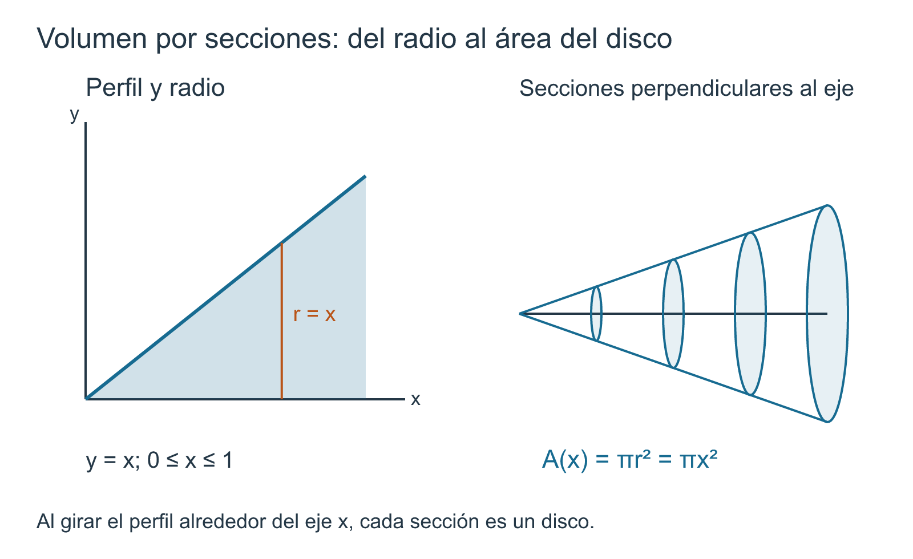

Aplicaciones geométricas y cuantitativas de la integral
19 Aplicaciones geométricas y cuantitativas de la integral
← Capítulo 18 · Índice del Tomo I · Capítulo 20 →
19.1 De una cantidad local a una integral: aditividad y densidad
Las aplicaciones que estudiaremos en este capítulo parecen, a primera vista, problemas de naturaleza distinta. Calcular un área, un volumen, la masa de una varilla o el trabajo realizado por una fuerza exige interpretar objetos diferentes y elegir modelos diferentes. Sin embargo, todos ellos comparten una misma pregunta matemática:
¿cómo reconstruimos una cantidad global cuando conocemos la manera en que esa cantidad se distribuye localmente?
Supongamos que una variable \(x\) recorre un intervalo \([a,b]\) y que una función \(q(x)\) describe una densidad local respecto de esa variable. Aquí la palabra densidad se usa en un sentido amplio: \(q(x)\) expresa cuánta cantidad corresponde, aproximadamente, a una unidad de longitud en torno a \(x\). No tiene por qué tratarse de densidad de masa; según el problema, \(q\) podrá representar una altura, un área de sección, una fuerza, una tasa u otra magnitud local.
Dividamos \([a,b]\) mediante una partición
\[ a=x_0<x_1<\cdots<x_n=b \]
y escribamos
\[ \Delta x_k=x_k-x_{k-1}. \]
Si escogemos un punto \(\xi_k\in[x_{k-1},x_k]\), la contribución correspondiente a un subintervalo pequeño tiene típicamente la forma
\[ q(\xi_k)\,\Delta x_k. \]
La cantidad total se aproxima entonces mediante la suma de esas contribuciones:
\[ \sum_{k=1}^n q(\xi_k)\,\Delta x_k. \]
Esta expresión no aparece por una regla de cálculo aprendida de memoria. Nace de una decisión de modelización: identificar qué cantidad se aporta localmente y qué variable mide el ancho de cada pieza. Solo después de esa elección aparece una suma de Riemann y, si el modelo satisface las hipótesis adecuadas, su límite conduce a una integral.
La arquitectura que gobernará todo el capítulo será, por tanto,
\[ \boxed{ \text{cantidad local} \longrightarrow \text{suma finita} \longrightarrow \text{integral} \longrightarrow \text{interpretación y control}. } \]
El paso siguiente consiste en volver rigurosa esta idea. En lugar de justificar por separado la misma construcción para cada aplicación, estableceremos un criterio general: si una cantidad es aditiva sobre subintervalos y su contribución local queda controlada por una densidad integrable, entonces la cantidad global está determinada por la integral de esa densidad.
Teorema 19.1 Teorema (cantidad aditiva determinada por una densidad). Sea \(q\in\mathcal R[a,b]\). Supongamos que a cada subintervalo cerrado \([\alpha,\beta]\subseteq[a,b]\), con \(\alpha\le\beta\), se le asigna un número real \(Q(\alpha,\beta)\) con las siguientes propiedades.
- Aditividad. Si \(a\le\alpha\le\beta\le\gamma\le b\), entonces \[ Q(\alpha,\gamma) = Q(\alpha,\beta)+Q(\beta,\gamma). \]
- Control local por la densidad. Para todo \(a\le\alpha\le\beta\le b\), \[ \inf_{[\alpha,\beta]}q\,(\beta-\alpha) \le Q(\alpha,\beta) \le \sup_{[\alpha,\beta]}q\,(\beta-\alpha). \]
Entonces
\[ \boxed{ Q(a,b)=\int_a^b q(x)\,dx. } \]
La primera hipótesis permite reconstruir una cantidad sobre un intervalo a partir de sus partes. La segunda afirma que, en cada subintervalo, la contribución real queda atrapada entre las contribuciones que producirían las densidades mínima y máxima allí presentes. La integrabilidad de \(q\) será precisamente lo que permita hacer desaparecer esa diferencia entre cotas inferiores y superiores.
Demostración. Sea
\[ P:\quad a=x_0<x_1<\cdots<x_n=b \]
una partición arbitraria de \([a,b]\). Para cada \(k\), escribamos
\[ m_k:=\inf_{[x_{k-1},x_k]}q, \qquad M_k:=\sup_{[x_{k-1},x_k]}q. \]
Por el control local,
\[ m_k\Delta x_k \le Q(x_{k-1},x_k) \le M_k\Delta x_k. \]
Sumando estas desigualdades para \(k=1,\dots,n\) y usando repetidamente la aditividad de \(Q\), obtenemos
\[ \sum_{k=1}^n m_k\Delta x_k \le Q(a,b) \le \sum_{k=1}^n M_k\Delta x_k. \]
Los extremos son precisamente las sumas inferior y superior de Darboux asociadas a \(P\). Por tanto,
\[ \boxed{ L(q,P) \le Q(a,b) \le U(q,P). } \]
Como \(q\in\mathcal R[a,b]\), su integral inferior y su integral superior coinciden. Además, para toda partición \(P\),
\[ L(q,P) \le \int_a^b q(x)\,dx \le U(q,P). \]
Si \(Q(a,b)\) fuese menor que la integral, la definición de integral inferior permitiría escoger una partición \(P\) con
\[ Q(a,b)<L(q,P), \]
contradiciendo el encierro anterior. Del mismo modo, si \(Q(a,b)\) fuese mayor que la integral, la definición de integral superior daría una partición \(P\) con
\[ U(q,P)<Q(a,b), \]
nuevamente imposible. En consecuencia,
\[ Q(a,b)=\int_a^b q(x)\,dx. \]
Esto demuestra el teorema. \(\square\)
Qué hace —y qué no hace— el teorema
Teorema 20.1 no sustituye el trabajo de modelización. Antes de aplicarlo debemos identificar dos objetos distintos:
- una cantidad \(Q(\alpha,\beta)\) asociada a cada subintervalo;
- una función \(q(x)\) que describa la cantidad aportada por unidad de la variable \(x\).
Una vez identificados, todavía hay que justificar que las contribuciones de intervalos contiguos se suman y que, sobre cada subintervalo, la cantidad queda encerrada por los valores extremos de la densidad. Solo entonces el teorema permite concluir que la acumulación global está representada por una integral.
Así, en las aplicaciones que siguen cambiarán los objetos geométricos o físicos, pero no la estructura matemática. Una altura puede actuar como densidad de área respecto de \(x\); un área de sección, como densidad de volumen; una densidad lineal, como densidad de masa; una fuerza, como densidad de trabajo respecto del desplazamiento. En cada caso la pregunta decisiva será la misma:
¿qué cantidad aporta un intervalo pequeño y qué función mide esa contribución por unidad de la variable elegida?
Esta perspectiva también proporciona un control dimensional inmediato. Si \(q\) tiene unidades de «cantidad por unidad de \(x\)», entonces
\[ q(\xi_k)\,\Delta x_k \]
tiene las unidades de la cantidad que se acumula, y lo mismo debe ocurrir con
\[ \int_a^b q(x)\,dx. \]
Por eso una integral de aplicación no queda justificada solo porque pueda calcularse: su integrando, su diferencial y sus unidades deben corresponder al modelo que se pretende representar.
Antes de seguir. En una aplicación concreta, ¿qué papel desempeñan \(Q\) y \(q\)? ¿Qué hipótesis expresa que las contribuciones de piezas contiguas pueden sumarse? ¿Por qué comprobar las unidades puede detectar una integral mal planteada incluso antes de evaluarla?
19.2 Área entre gráficas: diferencia, signo y valor absoluto
La primera aplicación geométrica del principio anterior exige distinguir dos cantidades que se parecen algebraicamente, pero no representan lo mismo.
Sean
\[ f,g:[a,b]\longrightarrow\mathbb R \]
funciones continuas. Para cada \(x\in[a,b]\), la diferencia
\[ h(x):=f(x)-g(x) \]
mide una separación vertical con signo entre sus gráficas. Si \(h(x)>0\), la gráfica de \(f\) está por encima de la de \(g\); si \(h(x)<0\), ocurre lo contrario; y si \(h(x)=0\), ambas se encuentran en ese punto.
Esta observación revela una primera dificultad. La integral
\[ \int_a^b\bigl(f(x)-g(x)\bigr)\,dx \]
acumula esas separaciones conservando el signo. Las regiones donde \(f>g\) contribuyen positivamente y las regiones donde \(g>f\) contribuyen negativamente. Por tanto, contribuciones geométricamente distintas pueden cancelarse entre sí.
El área geométrica, en cambio, no admite esa cancelación. Una franja vertical estrecha situada cerca de \(x\) tiene como altura la distancia vertical entre las dos gráficas, y una distancia no puede ser negativa. La magnitud local relevante es entonces
\[ |f(x)-g(x)|. \]
Así aparecen dos objetos diferentes:
\[ \boxed{ \text{separación orientada}=f-g } \]
frente a
\[ \boxed{ \text{separación geométrica}=|f-g|. } \]
Confundirlos conduce a uno de los errores más frecuentes en problemas de área. Que una integral definida sea negativa, positiva o incluso nula no determina por sí solo el área de la región comprendida entre dos gráficas: primero hay que decidir si el problema pide una acumulación orientada o una magnitud geométrica no negativa.
Antes de integrar debemos responder una pregunta de modelización:
¿qué función representa realmente la altura de cada franja vertical de la región?
Si una misma gráfica permanece arriba en todo el intervalo, la respuesta puede escribirse sin cambiar de expresión. Si las gráficas se cruzan, el signo de \(f-g\) cambia y la descripción de la altura exige tener en cuenta esos puntos de cruce. Ese será el paso siguiente.
Cuando una gráfica permanece arriba
Supongamos ahora que
\[ f(x)\ge g(x) \qquad\text{para todo }x\in[a,b]. \]
Entonces la separación vertical entre las gráficas es simplemente
\[ q(x):=f(x)-g(x)\ge0. \]
Sea \(A(\alpha,\beta)\) el área geométrica de la región comprendida entre ambas gráficas sobre un subintervalo \([\alpha,\beta]\subseteq[a,b]\). Esta cantidad es aditiva: si \(\alpha\le\beta\le\gamma\), las regiones sobre \([\alpha,\beta]\) y \([\beta,\gamma]\) tienen interiores disjuntos y forman conjuntamente la región sobre \([\alpha,\gamma]\), de modo que
\[ A(\alpha,\gamma) = A(\alpha,\beta)+A(\beta,\gamma). \]
Además, sobre \([\alpha,\beta]\) la altura de la región está comprendida entre
\[ \inf_{[\alpha,\beta]}(f-g) \]
y
\[ \sup_{[\alpha,\beta]}(f-g). \]
Por tanto, comparando la región con los rectángulos de base \(\beta-\alpha\) y esas alturas extremas, obtenemos
\[ \inf_{[\alpha,\beta]}(f-g)\,(\beta-\alpha) \le A(\alpha,\beta) \le \sup_{[\alpha,\beta]}(f-g)\,(\beta-\alpha). \]
Como \(f\) y \(g\) son continuas, \(f-g\) es continua y, por tanto, Riemann integrable. Se cumplen así exactamente las hipótesis de Teorema 20.1 con
\[ Q=A, \qquad q=f-g. \]
En consecuencia,
\[ \boxed{ A=\int_a^b\bigl(f(x)-g(x)\bigr)\,dx. } \]
La fórmula no se introduce aquí como una regla independiente: es una consecuencia del principio general de cantidad aditiva determinada por una densidad. La elección esencial fue reconocer que, cuando \(f\ge g\), la densidad de área respecto de \(x\) es la altura vertical \(f-g\).
Si la desigualdad se invierte en todo el intervalo, el mismo razonamiento da
\[ A=\int_a^b\bigl(g(x)-f(x)\bigr)\,dx. \]
El caso realmente nuevo aparece cuando ninguna de las dos gráficas permanece arriba en todo \([a,b]\). Entonces la función que representa la altura cambia de expresión al atravesar los puntos de cruce.
Cuando las gráficas se cruzan
Para obtener una formulación válida sin imponer restricciones sobre el número de intersecciones, definimos directamente la altura geométrica
\[ q(x):=|f(x)-g(x)|. \]
Como \(f\) y \(g\) son continuas, también lo es \(q\), y por tanto
\[ q\in\mathcal R[a,b]. \]
Sea \(A(\alpha,\beta)\) el área geométrica comprendida entre ambas gráficas sobre un subintervalo \([\alpha,\beta]\). Esta cantidad es aditiva sobre intervalos contiguos. Además, toda franja vertical sobre \([\alpha,\beta]\) tiene altura entre
\[ \inf_{[\alpha,\beta]}q \]
y
\[ \sup_{[\alpha,\beta]}q. \]
La comparación con rectángulos da
\[ \inf_{[\alpha,\beta]}q\,(\beta-\alpha) \le A(\alpha,\beta) \le \sup_{[\alpha,\beta]}q\,(\beta-\alpha). \]
Se cumplen así las hipótesis de Teorema 20.1 con
\[ Q=A, \qquad q=|f-g|. \]
En consecuencia,
\[ \boxed{ A = \int_a^b |f(x)-g(x)|\,dx. } \]
Esta demostración no requiere que las gráficas tengan un número finito de puntos de intersección. El valor absoluto aparece antes de integrar porque la cantidad local que se acumula es una distancia vertical y debe ser no negativa.
Cuando \(f-g\) cambia de signo solo un número finito de veces, puede ser conveniente localizar esos cambios y escribir la integral por tramos. Si
\[ a=c_0<c_1<\cdots<c_m=b \]
separa intervalos donde el signo de \(f-g\) permanece fijo, entonces
\[ \int_a^b|f-g| = \sum_{j=1}^{m} \int_{c_{j-1}}^{c_j}|f-g|. \]
En cada tramo, el valor absoluto se elimina usando el signo correspondiente. Esta descomposición es una herramienta de cálculo; la fórmula general del área ya quedó justificada por la densidad local \(|f-g|\).
Si se integra directamente \(f-g\), se obtiene una acumulación orientada y pueden producirse cancelaciones entre regiones situadas a lados opuestos del eje de signo.
Ejemplo 19.1 Cancelación orientada frente a área geométrica. Consideremos en \([-1,1]\) las funciones
\[ f(x)=x, \qquad g(x)=0. \]
Las gráficas se cruzan en \(x=0\). La diferencia es
\[ f(x)-g(x)=x, \]
de modo que
\[ \int_{-1}^{1}\bigl(f(x)-g(x)\bigr)\,dx = \int_{-1}^{1}x\,dx = 0. \]
Ese cero no significa que la región comprendida entre las gráficas tenga área nula. Solo expresa que la contribución negativa de \([-1,0]\) cancela exactamente la contribución positiva de \([0,1]\).
Para el área geométrica debemos integrar la separación no negativa:
\[ A = \int_{-1}^{1}|x|\,dx. \]
Partiendo en el punto de cruce,
\[ \begin{aligned} A &= \int_{-1}^{0}(-x)\,dx + \int_{0}^{1}x\,dx\\ &= \frac12+\frac12\\ &= 1. \end{aligned} \]
Por tanto,
\[ \boxed{ \int_{-1}^{1}(f-g)=0 \qquad\text{mientras que}\qquad \int_{-1}^{1}|f-g|=1. } \]
La diferencia entre ambas cantidades no es computacional, sino conceptual: una conserva orientación y permite cancelación; la otra mide una magnitud geométrica.
Antes de seguir. Si dos gráficas se cruzan varias veces, ¿qué debe determinarse antes de integrar? ¿Por qué una integral orientada puede ser cero aunque el área encerrada sea positiva? ¿Qué representa localmente la función \(|f-g|\)?
19.3 Volumen por secciones: cortar antes de integrar
Para calcular un volumen mediante una integral, el primer problema no es encontrar una primitiva. Es decidir cómo cortar el sólido.
Supongamos que un sólido se extiende a lo largo del eje \(x\) entre \(x=a\) y \(x=b\). Para cada \(x\in[a,b]\), consideremos la sección obtenida al cortar el sólido con un plano perpendicular al eje \(x\), y denotemos por
\[ A(x) \]
el área de esa sección transversal.
Dividamos ahora \([a,b]\) mediante una partición
\[ a=x_0<x_1<\cdots<x_n=b. \]
Sobre un subintervalo pequeño \([x_{k-1},x_k]\), de espesor
\[ \Delta x_k=x_k-x_{k-1}, \]
escogemos un punto \(\xi_k\). Si el área transversal cambia poco dentro de esa rebanada, podemos aproximarla por un prisma cuya base tiene área \(A(\xi_k)\) y cuyo espesor es \(\Delta x_k\). Su volumen aproximado es entonces
\[ A(\xi_k)\,\Delta x_k. \]
Sumando las contribuciones de todas las rebanadas obtenemos
\[ \sum_{k=1}^{n}A(\xi_k)\,\Delta x_k. \]
La expresión vuelve a tener exactamente la arquitectura de §19.1. La cantidad local ya no es una altura, como ocurría con el área entre gráficas, sino un área transversal; al multiplicarla por un espesor obtenemos una contribución de volumen.
Por eso, antes de escribir ninguna integral, debemos identificar tres elementos:
- la dirección de corte;
- el área \(A(x)\) de cada sección;
- el espesor correspondiente a la variable elegida.
La fórmula de volumen aparecerá solo después de que estos tres datos hayan sido fijados correctamente.
Principio de volumen por secciones
La suma anterior sugiere la fórmula correcta, pero podemos justificarla con el resultado general de §19.1.
Proposición 19.1 Proposición (volumen por secciones). Sea \(A\in\mathcal R[a,b]\) y supongamos que a cada subintervalo cerrado \([\alpha,\beta]\subseteq[a,b]\) se le asocia el volumen \(V(\alpha,\beta)\) de la parte del sólido comprendida entre los planos \(x=\alpha\) y \(x=\beta\). Supongamos además que:
- \(V\) es aditivo sobre intervalos contiguos;
- para todo \(a\le\alpha\le\beta\le b\), \[ \inf_{[\alpha,\beta]}A\,(\beta-\alpha) \le V(\alpha,\beta) \le \sup_{[\alpha,\beta]}A\,(\beta-\alpha). \]
Entonces
\[ \boxed{ V(a,b)=\int_a^b A(x)\,dx. } \]
Demostración. Basta aplicar Teorema 20.1 con
\[ Q(\alpha,\beta):=V(\alpha,\beta) \qquad\text{y}\qquad q(x):=A(x). \]
La aditividad de \(V\) proporciona la primera hipótesis del teorema, mientras que el encierro entre prismas de alturas extremas proporciona la segunda. Por tanto,
\[ V(a,b)=\int_a^b A(x)\,dx. \]
\(\square\)
La fórmula
\[ \boxed{ V=\int_a^b A(x)\,dx } \]
no debe leerse como «volumen igual a integral» sin más. El integrando \(A(x)\) tiene una interpretación geométrica precisa: es el área de la sección perpendicular a la variable de integración. El diferencial \(dx\) representa el espesor de las rebanadas que se están acumulando.
Así, el modelo local es
\[ \text{área transversal}\times\text{espesor} \]
y las unidades lo confirman:
\[ [\text{longitud}^2]\,[\text{longitud}] = [\text{longitud}^3]. \]
La dificultad de los problemas concretos estará, por tanto, en construir correctamente \(A(x)\). Una vez conocida esa función, la integral aparece como consecuencia de la acumulación de secciones.
Ejemplo 19.2 Secciones cuadradas sobre una base triangular. La base de un sólido es la región del plano comprendida entre
\[ y=x \qquad\text{y}\qquad y=2-x, \]
para \(0\le x\le1\). Las secciones perpendiculares al eje \(x\) son cuadrados.
Antes de integrar debemos construir el área de una sección. Para un valor fijo de \(x\), el lado del cuadrado es la distancia vertical entre las dos rectas:
\[ s(x) = (2-x)-x = 2(1-x). \]
Por tanto, el área transversal es
\[ A(x) = s(x)^2 = 4(1-x)^2. \]
El principio de Proposición 20.1 da entonces
\[ V = \int_0^1 4(1-x)^2\,dx. \]
Evaluando,
\[ \begin{aligned} V &= 4\int_0^1(1-2x+x^2)\,dx\\ &= 4\left[x-x^2+\frac{x^3}{3}\right]_0^1\\ &= \frac43. \end{aligned} \]
Así,
\[ \boxed{ V=\frac43. } \]
El paso decisivo no fue la integración. Fue la cadena
\[ \boxed{ \text{distancia entre las fronteras} \longrightarrow \text{lado del cuadrado} \longrightarrow A(x) \longrightarrow \int_0^1 A(x)\,dx. } \]
Si se hubiera integrado directamente la distancia \(2(1-x)\), se habría acumulado una longitud por un espesor y el resultado tendría dimensiones de área, no de volumen.
Antes de seguir. ¿Qué parte del problema determina la forma de \(A(x)\)? ¿Por qué la distancia entre las fronteras de la base no es todavía el integrando de volumen? ¿Qué cambiaría si las secciones fueran triángulos equiláteros en vez de cuadrados?
19.4 Sólidos de revolución I: discos y arandelas
El método de discos no introduce una nueva teoría de volumen. Es el principio de secciones de §19.3 aplicado a un sólido cuyas secciones transversales son círculos.
Discos como secciones transversales
Sea
\[ f:[a,b]\longrightarrow[0,\infty) \]
una función continua. Consideremos la región del plano comprendida entre la gráfica de \(f\), el eje \(x\) y las rectas \(x=a\) y \(x=b\), y hagámosla girar alrededor del eje \(x\).
Para un valor fijo de \(x\), el corte perpendicular al eje de rotación es un disco. Su radio no se obtiene de una fórmula nueva: es simplemente la distancia vertical desde el eje \(x\) hasta la gráfica, es decir,
\[ R(x)=f(x). \]
Por tanto, el área transversal es
\[ A(x)=\pi R(x)^2=\pi f(x)^2. \]
Al sustituir esta función de área en el principio de volumen por secciones obtenemos el caso de discos.
Corolario 19.1 Corolario (volumen por discos). Sea \(f:[a,b]\to[0,\infty)\) continua. El volumen del sólido obtenido al hacer girar alrededor del eje \(x\) la región
\[ \{(x,y):a\le x\le b,\ 0\le y\le f(x)\} \]
es
\[ \boxed{ V=\pi\int_a^b f(x)^2\,dx. } \]
Demostración. Cada sección perpendicular al eje \(x\) es un disco de radio \(f(x)\), luego
\[ A(x)=\pi f(x)^2. \]
Como \(f\) es continua, \(A\) también lo es y, en particular, es Riemann integrable. Aplicando Proposición 20.1,
\[ V = \int_a^b A(x)\,dx = \int_a^b \pi f(x)^2\,dx = \pi\int_a^b f(x)^2\,dx. \]
\(\square\)
La estructura del razonamiento es, por tanto,
\[ \boxed{ \text{radio }R(x) \longrightarrow \text{área }\pi R(x)^2 \longrightarrow \text{volumen }\int \pi R(x)^2\,dx. } \]
La integral aparece al final. La decisión geométrica esencial sigue siendo identificar la sección transversal correcta y su radio respecto del eje de rotación.

Arandelas: un disco menos un disco interior
Supongamos ahora que la región que gira alrededor del eje \(x\) no llega hasta el propio eje. Para cada \(x\), la sección perpendicular al eje de rotación ya no es un disco macizo, sino una arandela.
Sean
\[ R,r:[a,b]\longrightarrow[0,\infty) \]
funciones continuas tales que
\[ 0\le r(x)\le R(x) \qquad (x\in[a,b]). \]
Interpretamos \(R(x)\) como la distancia desde el eje de rotación hasta la frontera exterior de la región y \(r(x)\) como la distancia hasta la frontera interior.
Al girar la sección vertical alrededor del eje \(x\), obtenemos una arandela de radio exterior \(R(x)\) y radio interior \(r(x)\). Su área es la diferencia entre las áreas de dos discos:
\[ A(x) = \pi R(x)^2-\pi r(x)^2. \]
Por tanto,
\[ \boxed{ A(x) = \pi\bigl(R(x)^2-r(x)^2\bigr). } \]
Corolario 19.2 Corolario (volumen por arandelas). Sean \(R,r:[a,b]\to[0,\infty)\) continuas y supongamos que
\[ 0\le r(x)\le R(x) \qquad (x\in[a,b]). \]
Si las secciones perpendiculares al eje \(x\) del sólido son arandelas de radio exterior \(R(x)\) y radio interior \(r(x)\), entonces
\[ \boxed{ V = \pi\int_a^b \bigl(R(x)^2-r(x)^2\bigr)\,dx. } \]
Demostración. El área transversal es
\[ A(x) = \pi\bigl(R(x)^2-r(x)^2\bigr). \]
Como \(R\) y \(r\) son continuas, \(A\) es Riemann integrable. Aplicando Proposición 20.1,
\[ \begin{aligned} V &= \int_a^b A(x)\,dx\\ &= \int_a^b \pi\bigl(R(x)^2-r(x)^2\bigr)\,dx\\ &= \pi\int_a^b \bigl(R(x)^2-r(x)^2\bigr)\,dx. \end{aligned} \]
\(\square\)
La condición
\[ 0\le r(x)\le R(x) \]
no es decorativa. Garantiza que ambos radios sean geométricamente admisibles y que el área de la sección sea no negativa.
También conviene observar que los radios son distancias al eje de rotación, no necesariamente valores de las funciones que delimitan la región. Cuando el eje de rotación no es el eje \(x\), identificar correctamente esas distancias forma parte del modelo.
Ejemplo 19.3 Arandelas con eje de rotación desplazado. Consideremos la región comprendida entre
\[ y=x \qquad\text{y}\qquad y=x^2, \]
para \(0\le x\le1\), y hagámosla girar alrededor de la recta
\[ y=2. \]
En \([0,1]\) se tiene
\[ x^2\le x, \]
de modo que ambas curvas están por debajo del eje de rotación. La frontera más alejada de \(y=2\) es \(y=x^2\), mientras que la más cercana es \(y=x\). Por tanto,
\[ R(x)=2-x^2 \]
y
\[ r(x)=2-x. \]
El área transversal es entonces
\[ A(x) = \pi\left[(2-x^2)^2-(2-x)^2\right]. \]
Aplicando Corolario 20.2,
\[ V = \pi\int_0^1 \left[(2-x^2)^2-(2-x)^2\right]\,dx. \]
Simplificando el integrando,
\[ (2-x^2)^2-(2-x)^2 = 4x-5x^2+x^4. \]
Así,
\[ \begin{aligned} V &= \pi\int_0^1 \left(4x-5x^2+x^4\right)\,dx\\ &= \pi\left[ 2x^2-\frac53x^3+\frac15x^5 \right]_0^1\\ &= \pi\left( 2-\frac53+\frac15 \right)\\ &= \frac{8\pi}{15}. \end{aligned} \]
Por tanto,
\[ \boxed{ V=\frac{8\pi}{15}. } \]
Obsérvese que habría sido incorrecto tomar \(R(x)=x\) y \(r(x)=x^2\). Esas son alturas medidas desde el eje \(x\), pero el sólido gira alrededor de \(y=2\). Los radios deben medirse siempre como distancias al eje real de rotación.
Antes de seguir. ¿Cómo se decide cuál radio es exterior cuando el eje de rotación no coincide con un eje coordenado? ¿Por qué no basta con mirar qué función tiene mayor valor? ¿Qué control geométrico permite detectar un intercambio accidental entre \(R\) y \(r\)?
19.5 Sólidos de revolución II: cascarones y elección de representación
El método de cascarones parte de una elección geométrica distinta. En vez de cortar el sólido con secciones perpendiculares al eje de rotación, comenzamos con tiras paralelas a ese eje y seguimos lo que ocurre cuando cada una gira.
Sea
\[ f:[a,b]\longrightarrow[0,\infty) \]
continua, con
\[ 0\le a<b, \]
y consideremos la región
\[ \{(x,y):a\le x\le b,\ 0\le y\le f(x)\}. \]
Al hacerla girar alrededor del eje \(y\), una tira vertical estrecha situada cerca de \(x\) ya no produce un disco. Produce un cascarón cilíndrico.
Si la tira tiene espesor \(\Delta x\), entonces los tres datos locales son:
- radio aproximado: \(x\);
- altura aproximada: \(f(x)\);
- espesor: \(\Delta x\).
Al desplegar lateralmente un cascarón muy delgado, su volumen se aproxima por
\[ (\text{circunferencia})(\text{altura})(\text{espesor}). \]
Como la circunferencia correspondiente al radio \(x\) es
\[ 2\pi x, \]
la contribución local toma la forma
\[ \boxed{ 2\pi x\,f(x)\,\Delta x. } \]
Con una partición
\[ a=x_0<x_1<\cdots<x_n=b \]
y puntos \(\xi_k\in[x_{k-1},x_k]\), la suma de cascarones delgados queda modelada por
\[ \sum_{k=1}^{n} 2\pi \xi_k f(\xi_k)\,\Delta x_k. \]
La estructura local es ahora
\[ \boxed{ \text{circunferencia} \times \text{altura} \times \text{espesor}. } \]
Obsérvese la diferencia con discos y arandelas. Allí el corte perpendicular al eje producía directamente un área transversal. Aquí una tira paralela al eje genera una superficie cilíndrica delgada, y el volumen local se construye a partir de su circunferencia, su altura y su espesor.
Todavía no hemos elegido entre ambos métodos ni hemos escrito una fórmula global de cascarones. Por ahora solo hemos identificado qué cantidad aporta una tira vertical al girar.
De los cascarones delgados a la integral
La expresión local anterior puede justificarse sin introducir una nueva teoría de integración. Consideremos una partición
\[ P:\quad a=x_0<x_1<\cdots<x_n=b \]
y, en cada intervalo \([x_{k-1},x_k]\), escribamos
\[ m_k:=\inf_{[x_{k-1},x_k]}f, \qquad M_k:=\sup_{[x_{k-1},x_k]}f. \]
La parte del sólido comprendida entre los cilindros de radios \(x_{k-1}\) y \(x_k\) queda encerrada entre dos cascarones cilíndricos de alturas \(m_k\) y \(M_k\). Por tanto, su volumen \(V_k\) satisface
\[ \pi\bigl(x_k^2-x_{k-1}^2\bigr)m_k \le V_k \le \pi\bigl(x_k^2-x_{k-1}^2\bigr)M_k. \]
Si definimos
\[ c_k:=\frac{x_{k-1}+x_k}{2}, \]
entonces
\[ x_k^2-x_{k-1}^2 = 2c_k\,\Delta x_k. \]
Así, al sumar sobre todos los intervalos,
\[ \sum_{k=1}^n 2\pi c_k m_k\,\Delta x_k \le V \le \sum_{k=1}^n 2\pi c_k M_k\,\Delta x_k. \]
Entre ambas cotas se encuentra la suma etiquetada
\[ \sum_{k=1}^n 2\pi c_k f(c_k)\,\Delta x_k. \]
Además,
\[ 0 \le \sum_{k=1}^n 2\pi c_k(M_k-m_k)\,\Delta x_k \le 2\pi b \sum_{k=1}^n (M_k-m_k)\,\Delta x_k. \]
Como \(f\) es continua en \([a,b]\), es Riemann integrable y, al refinar suficientemente la partición, la última cantidad puede hacerse tan pequeña como se quiera. Al mismo tiempo, las sumas etiquetadas de
\[ x\longmapsto 2\pi x f(x) \]
convergen a su integral.
Proposición 19.2 Proposición (volumen por cascarones cilíndricos). Sea \(f:[a,b]\to[0,\infty)\) continua, con \(0\le a<b\). El volumen del sólido obtenido al hacer girar alrededor del eje \(y\) la región
\[ \{(x,y):a\le x\le b,\ 0\le y\le f(x)\} \]
es
\[ \boxed{ V = 2\pi\int_a^b x f(x)\,dx. } \]
La demostración anterior muestra de dónde procede cada factor:
\[ \boxed{ 2\pi x \;\times\; f(x) \;\times\; dx } \]
corresponde, respectivamente, a la circunferencia del cascarón, su altura y su espesor. La fórmula global no se memoriza aparte: es el límite de esa construcción local.
Dos representaciones del mismo volumen
La elección entre arandelas y cascarones depende de cómo describamos la misma región antes de hacerla girar.
Ejemplo 19.4 El mismo sólido con arandelas y cascarones. Consideremos la región
\[ 0\le x\le1, \qquad 0\le y\le x, \]
y hagámosla girar alrededor del eje \(y\).
Con tiras verticales, una tira situada en \(x\) genera un cascarón de radio \(x\) y altura \(x\). Por Proposición 20.2,
\[ V = 2\pi\int_0^1 x^2\,dx = \frac{2\pi}{3}. \]
La misma región puede describirse horizontalmente. Para un valor fijo de \(y\in[0,1]\),
\[ y\le x\le1. \]
Al girar esa tira horizontal alrededor del eje \(y\), se obtiene una arandela de radio exterior
\[ R(y)=1 \]
y radio interior
\[ r(y)=y. \]
Por Corolario 20.2,
\[ \begin{aligned} V &= \pi\int_0^1\bigl(1-y^2\bigr)\,dy\\ &= \pi\left[y-\frac{y^3}{3}\right]_0^1\\ &= \frac{2\pi}{3}. \end{aligned} \]
Ambas integrales representan el mismo sólido:
\[ \boxed{ 2\pi\int_0^1 x^2\,dx = \pi\int_0^1(1-y^2)\,dy = \frac{2\pi}{3}. } \]
Este ejemplo muestra que el método se elige antes del cálculo. Una representación trabaja con tiras paralelas al eje de rotación y produce cascarones; otra trabaja con tiras perpendiculares y produce discos o arandelas.
El criterio útil consiste en comparar las descripciones locales que genera cada elección:
- qué variable recorre la región con mayor naturalidad;
- qué fronteras deben escribirse como funciones de esa variable;
- cuántos tramos exige la descripción;
- qué radios, alturas o áreas transversales aparecen.
Una representación puede exigir despejar funciones o dividir el intervalo en varios tramos, mientras otra mantiene una sola expresión. La integral más conveniente surge de la geometría de la región y del eje de rotación.
Antes de seguir. Para una región dada y un eje de rotación fijo, ¿qué tipo de tira produce arandelas y cuál produce cascarones? ¿Por qué dos integrales con integrandos distintos pueden representar exactamente el mismo volumen? ¿Qué conviene examinar antes de decidir la variable de integración?
19.6 Longitud de la gráfica: de polígonos a \(\int\sqrt{1+(f')^2}\)
El área y el volumen se construyeron acumulando cantidades locales que ya tenían una interpretación directa: alturas, áreas transversales o cascarones. La longitud de una gráfica exige un paso distinto. Antes de disponer de una densidad que podamos integrar, debemos decidir cómo aproximar la curva mediante objetos cuya longitud sí sepamos calcular exactamente.
Sea
\[ f\in C^1([a,b]) \]
y consideremos una partición
\[ P:\quad a=x_0<x_1<\cdots<x_n=b. \]
Sobre la gráfica de \(f\) tomamos los puntos
\[ P_k:=\bigl(x_k,f(x_k)\bigr), \qquad k=0,\dots,n. \]
Uniendo cada par consecutivo \(P_{k-1}\) y \(P_k\) mediante un segmento recto obtenemos una poligonal inscrita en la gráfica.
La longitud del segmento correspondiente al subintervalo \([x_{k-1},x_k]\) es, por el teorema de Pitágoras,
\[ \sqrt{ (x_k-x_{k-1})^2 + \bigl(f(x_k)-f(x_{k-1})\bigr)^2 }. \]
Por tanto, la longitud total de la poligonal es la suma de esas longitudes.
Definición 19.1 Definición (longitud poligonal asociada a una partición). Sea \(f:[a,b]\to\mathbb R\) y sea
\[ P:\quad a=x_0<x_1<\cdots<x_n=b \]
una partición. Definimos la longitud poligonal de la gráfica de \(f\) asociada a \(P\) por
\[ \boxed{ L_P(f) := \sum_{k=1}^{n} \sqrt{ (x_k-x_{k-1})^2 + \bigl(f(x_k)-f(x_{k-1})\bigr)^2 }. } \]
Esta definición no supone todavía que exista una longitud límite de la gráfica. Solo asigna una longitud exacta a cada aproximación poligonal determinada por una partición.
La pregunta siguiente será cómo relacionar cada término de \(L_P(f)\) con la derivada de \(f\). Esa relación permitirá convertir la geometría de los segmentos en una suma de Riemann.
Del segmento a una suma etiquetada
Como \(f\in C^1([a,b])\), podemos aplicar Teorema 9.3 en cada subintervalo \([x_{k-1},x_k]\). Existe entonces un punto
\[ \xi_k\in(x_{k-1},x_k) \]
tal que
\[ \frac{f(x_k)-f(x_{k-1})}{x_k-x_{k-1}} = f'(\xi_k). \]
Como
\[ \Delta x_k:=x_k-x_{k-1}>0, \]
se sigue que
\[ f(x_k)-f(x_{k-1}) = f'(\xi_k)\,\Delta x_k. \]
Sustituyendo esta identidad en la longitud de la cuerda correspondiente,
\[ \begin{aligned} &\sqrt{ (\Delta x_k)^2 + \bigl(f(x_k)-f(x_{k-1})\bigr)^2 }\\ &\qquad= \sqrt{ (\Delta x_k)^2 + f'(\xi_k)^2(\Delta x_k)^2 }\\ &\qquad= \sqrt{1+f'(\xi_k)^2}\,\Delta x_k. \end{aligned} \]
Por tanto, la longitud poligonal puede escribirse exactamente como
\[ \boxed{ L_P(f) = \sum_{k=1}^{n} \sqrt{1+f'(\xi_k)^2}\,\Delta x_k. } \]
Esta ya es una suma etiquetada de la función
\[ g(x):=\sqrt{1+f'(x)^2}. \]
La aparición de \(g\) no es una conjetura geométrica añadida después: surge directamente de aplicar el teorema del valor medio a cada cuerda de la poligonal.
Como \(f'\) es continua en \([a,b]\), también lo es \(g\), y por tanto \(g\) es Riemann integrable. Queda por justificar que, al refinar las particiones, las longitudes poligonales convergen a una cantidad bien definida y que ese límite coincide con la integral de \(g\).
Refinar una poligonal solo puede aumentar su longitud
Lema 19.1 Lema (monotonía bajo refinamiento). Si \(Q\) es un refinamiento de una partición \(P\) de \([a,b]\), entonces
\[ L_P(f)\le L_Q(f). \]
Demostración. Basta considerar el caso en que \(Q\) se obtiene insertando un único punto
\[ c\in(x_{k-1},x_k) \]
en \(P\). La cuerda que une
\[ \bigl(x_{k-1},f(x_{k-1})\bigr) \quad\text{con}\quad \bigl(x_k,f(x_k)\bigr) \]
queda reemplazada por dos segmentos que pasan por
\[ \bigl(c,f(c)\bigr). \]
Por la desigualdad triangular para distancias euclidianas, la suma de las longitudes de esos dos segmentos es al menos la longitud de la cuerda original. Los demás segmentos no cambian. Por tanto,
\[ L_P(f)\le L_Q(f). \]
Insertando sucesivamente todos los puntos adicionales de \(Q\) obtenemos el caso general. \(\square\)
Este lema organiza las aproximaciones poligonales de manera monótona bajo refinamiento y motiva definir la longitud mediante el supremo de todas ellas.
Definición 19.2 Definición (longitud de la gráfica). Sea \(f:[a,b]\to\mathbb R\). Si el conjunto de longitudes poligonales
\[ \{L_P(f):P\text{ partición de }[a,b]\} \]
está acotado superiormente, definimos la longitud de la gráfica de \(f\) por
\[ \boxed{ L(f) := \sup_P L_P(f). } \]
Para funciones \(C^1\) la acotación requerida en esta definición viene dada precisamente por la integral que estamos a punto de identificar.
Teorema 19.2 Teorema (longitud de una gráfica \(C^1\)). Si \(f\in C^1([a,b])\), entonces la gráfica de \(f\) tiene longitud finita y
\[ \boxed{ L(f) = \int_a^b \sqrt{1+f'(x)^2}\,dx. } \]
Demostración. Definamos
\[ g(x):=\sqrt{1+f'(x)^2}. \]
Como \(f'\) es continua, también lo es \(g\), y por tanto \(g\in\mathcal R[a,b]\).
Fijemos una partición cualquiera \(P\). Construyamos una sucesión de refinamientos
\[ P\preceq P_1\preceq P_2\preceq\cdots \]
cuya malla tienda a cero. Por Lema 20.1,
\[ L_P(f)\le L_{P_m}(f) \qquad(m\ge1). \]
Por el teorema del valor medio aplicado en cada subintervalo de \(P_m\), existen etiquetas \(\xi_{m,k}\) tales que
\[ L_{P_m}(f) = \sum_k g(\xi_{m,k})\,\Delta x_{m,k}. \]
Como la malla de \(P_m\) tiende a cero y \(g\) es Riemann integrable, Teorema 14.2 implica
\[ L_{P_m}(f) \longrightarrow \int_a^b g(x)\,dx. \]
Pasando al límite en la desigualdad anterior,
\[ L_P(f) \le \int_a^b g(x)\,dx. \]
Como \(P\) era arbitraria, todas las longitudes poligonales están acotadas por esa integral. En particular, Definición 20.2 es aplicable y
\[ L(f) \le \int_a^b g(x)\,dx. \]
Para la desigualdad opuesta, tomemos las particiones uniformes
\[ U_n:\quad a=x_0^{(n)}<\cdots<x_n^{(n)}=b. \]
Su malla tiende a cero. De nuevo, por el teorema del valor medio,
\[ L_{U_n}(f) \]
es una suma etiquetada de \(g\), de modo que Teorema 14.2 da
\[ L_{U_n}(f) \longrightarrow \int_a^b g(x)\,dx. \]
Pero, por definición de supremo,
\[ L_{U_n}(f)\le L(f) \]
para todo \(n\). Al tomar límites,
\[ \int_a^b g(x)\,dx \le L(f). \]
Combinando ambas desigualdades,
\[ L(f) = \int_a^b g(x)\,dx = \int_a^b \sqrt{1+f'(x)^2}\,dx. \]
Esto demuestra el teorema. \(\square\)
La fórmula de longitud surge así de tres ingredientes que ya pertenecían al tratado: geometría euclidiana de las cuerdas, teorema del valor medio y convergencia de sumas etiquetadas de Riemann.
Antes de seguir. ¿Por qué no basta observar que una sola longitud poligonal es una suma etiquetada? ¿Qué papel cumple la monotonía bajo refinamiento? ¿Dónde se usa exactamente la hipótesis \(f\in C^1([a,b])\)?
19.7 Densidad lineal y cantidad total
Hasta ahora las cantidades locales surgían de construcciones geométricas. En una varilla, un cable o cualquier objeto distribuido a lo largo de un intervalo aparece otra situación natural: la cantidad total puede variar de un punto a otro porque cambia su densidad lineal.
Sea una varilla situada sobre el intervalo \([a,b]\). Una función
\[ \rho:[a,b]\longrightarrow[0,\infty) \]
describe su densidad lineal si \(\rho(x)\) representa la cantidad de masa por unidad de longitud cerca del punto \(x\).
La densidad y la masa total no son la misma magnitud. Si \(x\) se mide en metros y la masa en kilogramos, entonces
\[ [\rho] = \frac{\text{kg}}{\text{m}}, \]
mientras que una cantidad de masa tiene unidades de kg.
Consideremos un subintervalo pequeño
\[ [x_{k-1},x_k] \]
de longitud
\[ \Delta x_k=x_k-x_{k-1}. \]
Si escogemos un punto \(\xi_k\) dentro de ese tramo y la densidad varía poco allí, la masa contenida en la pequeña pieza se aproxima por
\[ \boxed{ \Delta M_k \approx \rho(\xi_k)\,\Delta x_k. } \]
La interpretación dimensional confirma la estructura:
\[ \frac{\text{kg}}{\text{m}} \cdot \text{m} = \text{kg}. \]
Así, al dividir la varilla mediante una partición, la masa total se aproxima por
\[ \sum_{k=1}^{n} \rho(\xi_k)\,\Delta x_k. \]
La expresión tiene exactamente la forma que apareció en §19.1. En este caso,
\[ \boxed{ \text{densidad lineal} \times \text{longitud} = \text{cantidad local}. } \]
La misma estructura puede modelar otras cantidades distribuidas a lo largo de una dimensión: carga eléctrica por unidad de longitud, cantidad de material por unidad de longitud o cualquier magnitud cuya contribución sobre un tramo pequeño quede controlada por una densidad lineal.
El paso siguiente será convertir esta aproximación local en una fórmula exacta para la cantidad total, usando el principio de cantidad aditiva determinada por una densidad.
De la densidad a la cantidad total
Sea ahora
\[ \rho\in\mathcal R[a,b], \qquad \rho(x)\ge0 \quad(x\in[a,b]), \]
y sea \(M(\alpha,\beta)\) la masa contenida en el tramo \([\alpha,\beta]\) de la varilla.
La masa es aditiva sobre intervalos contiguos:
\[ M(\alpha,\gamma) = M(\alpha,\beta)+M(\beta,\gamma) \]
siempre que
\[ a\le\alpha\le\beta\le\gamma\le b. \]
Además, si en un subintervalo \([\alpha,\beta]\) la densidad está comprendida entre sus valores extremo inferior y superior, la masa de ese tramo queda encerrada entre las masas que tendrían dos varillas uniformes con esas densidades constantes:
\[ \inf_{[\alpha,\beta]}\rho\,(\beta-\alpha) \le M(\alpha,\beta) \le \sup_{[\alpha,\beta]}\rho\,(\beta-\alpha). \]
Estamos exactamente en la situación de Teorema 20.1.
Corolario 19.3 Corolario (cantidad total a partir de una densidad lineal). Sea \(\rho\in\mathcal R[a,b]\) una densidad lineal no negativa y sea \(M(\alpha,\beta)\) una cantidad aditiva asociada a cada subintervalo, sometida al control local
\[ \inf_{[\alpha,\beta]}\rho\,(\beta-\alpha) \le M(\alpha,\beta) \le \sup_{[\alpha,\beta]}\rho\,(\beta-\alpha). \]
Entonces
\[ \boxed{ M(a,b) = \int_a^b \rho(x)\,dx. } \]
Demostración. Basta aplicar Teorema 20.1 con
\[ Q(\alpha,\beta):=M(\alpha,\beta) \qquad\text{y}\qquad q(x):=\rho(x). \]
\(\square\)
En el caso de una varilla, podemos escribir simplemente
\[ \boxed{ M = \int_a^b \rho(x)\,dx. } \]
La fórmula expresa que la masa total es la acumulación de masa por unidad de longitud. Su lectura dimensional es
\[ \left[ \frac{\text{masa}}{\text{longitud}} \right] [\text{longitud}] = [\text{masa}]. \]
La misma construcción sirve para otras cantidades unidimensionales. Si \(\lambda(x)\) representa carga eléctrica por unidad de longitud, por ejemplo, la carga total es
\[ Q = \int_a^b \lambda(x)\,dx, \]
siempre que el modelo satisfaga las correspondientes hipótesis de aditividad e integrabilidad.
El símbolo que recibe la densidad puede cambiar, y también puede cambiar la naturaleza física de la cantidad acumulada. La estructura matemática permanece:
\[ \boxed{ \text{cantidad total} = \int \text{densidad respecto de la variable} }. \]
En la sección siguiente la densidad dejará de usarse solo para calcular cuánto hay. La emplearemos además como peso para determinar dónde se encuentra distribuida esa cantidad.
Ejemplo 19.5 Una varilla con densidad creciente. Una varilla ocupa el intervalo
\[ 0\le x\le2 \]
metros. Su densidad lineal viene dada numéricamente por
\[ \rho(x)=1+2x \]
kilogramos por metro; el coeficiente de \(x\) incorpora las unidades necesarias para que \(\rho\) tenga siempre unidades de masa por longitud.
La masa total es
\[ M = \int_0^2(1+2x)\,dx. \]
Por tanto,
\[ \begin{aligned} M &= \left[x+x^2\right]_0^2\\ &= 2+4\\ &= 6. \end{aligned} \]
Así,
\[ \boxed{ M=6\ \text{kg}. } \]
El valor \(\rho(2)=5\) no es la masa de la varilla: es una densidad lineal, medida en kg/m, en el extremo derecho. Del mismo modo, la longitud total \(2\) m tampoco determina por sí sola la masa, porque la densidad no es constante.
El control dimensional es
\[ \left(\frac{\text{kg}}{\text{m}}\right) (\text{m}) = \text{kg}, \]
exactamente las unidades del resultado.
Antes de seguir. ¿Qué información aporta \(\rho(2)\) y qué información aporta \(\int_0^2\rho(x)\,dx\)? ¿Por qué multiplicar la longitud total por una densidad tomada en un solo punto no determina en general la masa? ¿Qué unidades debe tener siempre la integral de una densidad lineal respecto de la longitud?
19.8 Promedio ponderado, primer momento y centro de masa de una varilla
La densidad \(\rho\) permite responder primero cuánto hay en total:
\[ M=\int_a^b \rho(x)\,dx. \]
Ahora queremos usar la misma función para describir dónde está distribuida esa masa.
La herramienta necesaria ya fue construida en C16. Según Definición 15.2, si una función \(w\) actúa como peso y
\[ \int_a^b w(x)\,dx\ne0, \]
podemos formar el promedio integral de una función \(f\) ponderado por \(w\).
En una varilla, la función que queremos promediar es la propia posición,
\[ p(x):=x, \]
y el peso natural es la densidad,
\[ w(x):=\rho(x). \]
Esto expresa una idea sencilla: una posición donde hay más masa debe influir más en la posición media de la varilla que otra donde hay menos.
Para que ese promedio esté definido necesitamos que la masa total sea positiva:
\[ M=\int_a^b \rho(x)\,dx>0. \]
Esta hipótesis merece quedar visible. De \(\rho\ge0\) y \(\rho\not\equiv0\) no se sigue automáticamente, para una función meramente Riemann-integrable, que su integral sea positiva; C16 ya separó cuidadosamente ambas condiciones.
Bajo la hipótesis \(M>0\), Definición 15.2 permite considerar
\[ \operatorname{Avg}_{\rho,[a,b]}(p). \]
Este objeto es el promedio ponderado de la posición: cada punto \(x\) interviene con un peso proporcional a la cantidad de masa situada cerca de él.
La estructura conceptual es, por tanto,
\[ \boxed{ \text{posición} + \text{densidad como peso} \longrightarrow \text{posición media ponderada}. } \]
En el siguiente paso identificaremos el numerador que aparece en este promedio, le daremos su interpretación como primer momento y obtendremos de ahí la fórmula del centro de masa.
Primer momento y centro de masa
El numerador del promedio ponderado de la posición es
\[ \int_a^b x\rho(x)\,dx. \]
Cada contribución local tiene la forma
\[ x\,\rho(x)\,dx. \]
La densidad aporta la cantidad de masa por unidad de longitud y el factor \(x\) registra la posición de esa masa respecto del origen.
Definición 19.3 Definición (primer momento respecto del origen). Sea \(\rho\in\mathcal R[a,b]\) una densidad lineal tal que \(x\rho(x)\) sea Riemann-integrable. Definimos el primer momento respecto del origen por
\[ \boxed{ \mathcal M_0 := \int_a^b x\rho(x)\,dx. } \]
Si \(x\) se mide en unidades de longitud y \(\rho\) en masa por longitud, entonces
\[ [\mathcal M_0] = [\text{longitud}] \left[ \frac{\text{masa}}{\text{longitud}} \right] [\text{longitud}] = [\text{masa}]\,[\text{longitud}]. \]
El primer momento no es una posición: combina masa y posición. Para obtener una posición debemos normalizarlo por la masa total.
Corolario 19.4 Corolario (centro de masa de una varilla). Sea \(\rho\in\mathcal R[a,b]\) una densidad lineal no negativa y supongamos
\[ M := \int_a^b \rho(x)\,dx > 0. \]
El centro de masa de la varilla es el promedio de la posición ponderado por \(\rho\) y viene dado por
\[ \boxed{ \bar x = \frac{\displaystyle\int_a^b x\rho(x)\,dx} {\displaystyle\int_a^b \rho(x)\,dx} = \frac{\mathcal M_0}{M}. } \]
Demostración. Aplicamos Definición 15.2 a la función posición
\[ p(x)=x \]
con peso
\[ w(x)=\rho(x). \]
Como
\[ \int_a^b\rho(x)\,dx=M>0, \]
el promedio ponderado está definido y
\[ \operatorname{Avg}_{\rho,[a,b]}(p) = \frac{\displaystyle\int_a^b x\rho(x)\,dx} {\displaystyle\int_a^b\rho(x)\,dx}. \]
Por definición física del centro de masa como posición media ponderada por la masa, esta cantidad es \(\bar x\). \(\square\)
La normalización por \(M\) elimina la unidad de masa:
\[ \frac{ [\text{masa}]\,[\text{longitud}] }{ [\text{masa}] } = [\text{longitud}], \]
como corresponde a una posición.
La fórmula muestra también la diferencia entre las dos preguntas de esta parte del capítulo:
\[ \int_a^b\rho(x)\,dx \]
responde cuánta masa hay, mientras que
\[ \frac{\int_a^b x\rho(x)\,dx}{\int_a^b\rho(x)\,dx} \]
responde dónde está centrada esa masa.
El centro de masa permanece dentro de la varilla
La teoría ponderada de C16 proporciona inmediatamente una cota geométrica importante.
Como la función posición
\[ p(x)=x \]
es continua en \([a,b]\), la densidad satisface \(\rho\ge0\) y
\[ \int_a^b\rho(x)\,dx=M>0, \]
podemos aplicar Teorema 15.2. Existe entonces un punto
\[ c\in[a,b] \]
tal que
\[ \operatorname{Avg}_{\rho,[a,b]}(p) = p(c). \]
Por Corolario 20.4, el miembro izquierdo es \(\bar x\), mientras que \(p(c)=c\). Por tanto,
\[ \bar x=c\in[a,b]. \]
En consecuencia,
\[ \boxed{ a\le \bar x\le b. } \]
Esta cota no requiere calcular explícitamente ninguna integral: es una consecuencia estructural del hecho de que el centro de masa es un promedio ponderado de posiciones pertenecientes al propio intervalo.
Ejemplo 19.6 Centro de masa de la varilla con densidad creciente. Retomemos la varilla de Ejemplo 20.5:
\[ 0\le x\le2, \qquad \rho(x)=1+2x. \]
Ya sabemos que su masa total es
\[ M=6. \]
Su primer momento respecto del origen es
\[ \begin{aligned} \mathcal M_0 &= \int_0^2 x(1+2x)\,dx\\ &= \int_0^2(x+2x^2)\,dx\\ &= \left[ \frac{x^2}{2} + \frac{2x^3}{3} \right]_0^2\\ &= 2+\frac{16}{3}\\ &= \frac{22}{3}. \end{aligned} \]
Por tanto,
\[ \bar x = \frac{\mathcal M_0}{M} = \frac{22/3}{6} = \frac{11}{9}. \]
Así,
\[ \boxed{ \bar x=\frac{11}{9}\ \text{m}. } \]
La cota general se verifica:
\[ 0 < \frac{11}{9} < 2. \]
Además,
\[ \frac{11}{9}>1, \]
de modo que el centro de masa queda a la derecha del punto medio geométrico de la varilla. Esto concuerda con el modelo: la densidad aumenta con \(x\), por lo que las posiciones cercanas al extremo derecho reciben mayor peso.
Antes de seguir. ¿Por qué \(a\le\bar x\le b\) puede deducirse sin calcular las integrales? ¿Qué papel cumple la condición \(M>0\)? ¿Por qué una densidad creciente puede desplazar el centro de masa respecto del punto medio geométrico?
19.9 Trabajo de una fuerza variable
Cuando una fuerza constante actúa en la misma dirección que un desplazamiento rectilíneo, el trabajo se calcula como el producto de la fuerza por el desplazamiento. Si la fuerza cambia con la posición, esa fórmula ya no puede aplicarse usando un único valor de la fuerza sobre todo el recorrido.
Supongamos que una partícula se mueve a lo largo del eje \(x\) desde \(x=a\) hasta \(x=b\), y que
\[ F:[a,b]\longrightarrow\mathbb R \]
representa la componente de la fuerza en la dirección positiva del eje.
Dividamos el intervalo mediante una partición
\[ a=x_0<x_1<\cdots<x_n=b. \]
En un subintervalo pequeño \([x_{k-1},x_k]\), elegimos un punto \(\xi_k\). Si la fuerza varía poco en ese tramo, podemos aproximarla por el valor constante \(F(\xi_k)\). El trabajo realizado en la pequeña pieza queda entonces aproximado por
\[ \boxed{ \Delta W_k \approx F(\xi_k)\,\Delta x_k. } \]
La estructura vuelve a ser la de §19.1:
\[ \boxed{ \text{fuerza local} \times \text{desplazamiento} = \text{trabajo local}. } \]
Al sumar todos los aportes obtenemos
\[ \sum_{k=1}^{n} F(\xi_k)\,\Delta x_k. \]
Aquí el signo forma parte del modelo. Si
\[ F(\xi_k)>0, \]
la fuerza favorece el desplazamiento positivo y la contribución al trabajo es positiva. Si
\[ F(\xi_k)<0, \]
la fuerza se opone a ese desplazamiento y la contribución es negativa.
Por tanto, el trabajo que estamos acumulando es una cantidad orientada. Reemplazar \(F\) por \(|F|\) cambiaría la pregunta: eliminaría la información sobre si la fuerza ayuda o se opone al movimiento.
El control dimensional también coincide con la interpretación física. Si la fuerza se mide en newtons y la posición en metros,
\[ [\text{trabajo}] = [\text{N}][\text{m}] = [\text{J}]. \]
Así, la integral que aparecerá debe tener unidades de energía. El siguiente paso será convertir esta suma local en la fórmula exacta del trabajo de una fuerza variable.
De la fuerza local al trabajo total
Sea ahora
\[ F\in\mathcal R[a,b], \]
y denote \(W(\alpha,\beta)\) el trabajo realizado por la fuerza cuando la partícula se desplaza desde \(x=\alpha\) hasta \(x=\beta\), con
\[ a\le\alpha\le\beta\le b. \]
El trabajo es aditivo sobre intervalos contiguos:
\[ W(\alpha,\gamma) = W(\alpha,\beta)+W(\beta,\gamma) \]
si
\[ a\le\alpha\le\beta\le\gamma\le b. \]
Además, sobre un tramo \([\alpha,\beta]\), la componente de la fuerza queda comprendida entre
\[ \inf_{[\alpha,\beta]}F \]
y
\[ \sup_{[\alpha,\beta]}F. \]
El modelo físico local se formaliza exigiendo que el trabajo realizado en ese tramo quede sometido al encierro
\[ \inf_{[\alpha,\beta]}F\,(\beta-\alpha) \le W(\alpha,\beta) \le \sup_{[\alpha,\beta]}F\,(\beta-\alpha). \]
Esta condición expresa que, sobre un desplazamiento positivo \(\beta-\alpha\), el trabajo de una fuerza variable queda entre los trabajos que producirían fuerzas constantes iguales a sus valores extremo inferior y superior en el tramo. Junto con la aditividad, proporciona exactamente las hipótesis necesarias para aplicar Teorema 20.1.
Corolario 19.5 Corolario (trabajo de una fuerza variable). Sea \(F\in\mathcal R[a,b]\) la componente de una fuerza sobre el eje \(x\), positiva en el sentido de los valores crecientes de \(x\), y supongamos que la partícula se desplaza desde \(x=a\) hasta \(x=b\). Si el trabajo sobre subintervalos es aditivo y satisface el control local anterior, entonces
\[ \boxed{ W = \int_a^b F(x)\,dx. } \]
Demostración. Aplicamos Teorema 20.1 con
\[ Q(\alpha,\beta):=W(\alpha,\beta) \qquad\text{y}\qquad q(x):=F(x). \]
Así,
\[ W(a,b) = \int_a^b F(x)\,dx. \]
\(\square\)
La fórmula conserva el signo de la fuerza. Por ejemplo, si
\[ F(x)\le0 \qquad (x\in[a,b]), \]
mientras el desplazamiento se realiza de \(a\) hacia \(b\), entonces por monotonía de la integral
\[ W\le0. \]
Esto expresa que la fuerza se opone al movimiento en todo el recorrido.
La orientación también importa en los extremos. Con la convención de integral orientada,
\[ \int_b^a F(x)\,dx = -\int_a^b F(x)\,dx. \]
Por tanto, recorrer el mismo intervalo en sentido contrario cambia el signo del trabajo asociado al mismo campo unidimensional de fuerzas.
Finalmente, las unidades verifican el modelo:
\[ \int_a^b \underbrace{F(x)}_{\mathrm N} \underbrace{dx}_{\mathrm m} \]
tiene unidades de
\[ \mathrm{N\,m} = \mathrm J. \]
La integral representa, por tanto, una acumulación orientada de energía transferida por la fuerza a lo largo del desplazamiento.
El resorte de Hooke: qué fuerza realiza el trabajo
Un resorte ideal permite ver por qué el signo debe fijarse antes de integrar. Sea \(x\ge0\) la elongación medida desde la posición de equilibrio y sea \(k>0\) la constante elástica.
La fuerza que ejerce el resorte sobre el extremo desplazado es restauradora:
\[ F_{\mathrm{res}}(x)=-kx. \]
Si el extremo se mueve desde \(x=0\) hasta \(x=L>0\), el trabajo realizado por el propio resorte es
\[ W_{\mathrm{res}} = \int_0^L(-kx)\,dx = -\frac{kL^2}{2}. \]
El signo negativo expresa que la fuerza del resorte apunta en sentido opuesto al desplazamiento.
En cambio, si el resorte se estira lentamente mediante una fuerza externa que equilibra en cada posición a la fuerza restauradora, entonces
\[ F_{\mathrm{ext}}(x)=kx. \]
El trabajo realizado por esa fuerza externa es
\[ W_{\mathrm{ext}} = \int_0^L kx\,dx = \frac{kL^2}{2}. \]
Por tanto,
\[ \boxed{ W_{\mathrm{ext}} = -\, W_{\mathrm{res}} = \frac{kL^2}{2}. } \]
Ejemplo 19.7 Trabajo para estirar un resorte. Un resorte ideal tiene constante elástica
\[ k=40\ \mathrm{N/m}. \]
¿Cuánto trabajo debe realizar una fuerza externa para estirarlo lentamente desde su posición de equilibrio hasta una elongación de
\[ L=0.30\ \mathrm m? \]
La fuerza externa necesaria en la posición \(x\) es
\[ F_{\mathrm{ext}}(x)=40x. \]
Luego
\[ \begin{aligned} W_{\mathrm{ext}} &= \int_0^{0.30}40x\,dx\\ &= 20x^2\Big|_0^{0.30}\\ &= 20(0.30)^2\\ &= 1.8. \end{aligned} \]
Así,
\[ \boxed{ W_{\mathrm{ext}}=1.8\ \mathrm J. } \]
El resorte realiza simultáneamente trabajo
\[ W_{\mathrm{res}}=-1.8\ \mathrm J. \]
Las dos respuestas no compiten: corresponden a fuerzas distintas.
El ejemplo ilustra una regla de modelización esencial: antes de escribir la integral hay que identificar qué fuerza se está integrando y cuál es la orientación del desplazamiento. La misma trayectoria puede producir trabajos con signos opuestos para fuerzas diferentes.
Antes de seguir. ¿Qué debe identificarse antes de integrar una fuerza variable: la magnitud de la fuerza, su componente en la dirección del movimiento o ambas? ¿Cómo cambia el signo del trabajo si se invierte la orientación del desplazamiento? ¿Por qué el trabajo del resorte y el de la fuerza externa pueden tener igual magnitud y signos opuestos sobre la misma trayectoria?
La sección siguiente mantendrá la misma arquitectura de acumulación, pero cambiará el significado de la cantidad local. En lugar de multiplicar una fuerza por un pequeño desplazamiento, acumularemos una tasa conocida sobre pequeños incrementos de su variable para reconstruir un cambio neto.
19.10 Cambio neto desde una tasa conocida
Muchas cantidades cambian a lo largo del tiempo —o de otra variable— y lo que conocemos directamente no es la cantidad misma, sino su tasa de cambio.
Supongamos que
\[ Q:[a,b]\longrightarrow\mathbb R \]
es continua en \([a,b]\) y diferenciable en \((a,b)\), y que su tasa
\[ r(t):=Q'(t) \]
es Riemann-integrable.
Entonces Teorema 16.3 da
\[ \boxed{ Q(b)-Q(a) = \int_a^b r(t)\,dt. } \]
Esta igualdad admite una lectura cuantitativa inmediata:
integrar una tasa conocida sobre un intervalo recupera el cambio neto de la cantidad cuya tasa estamos acumulando.
La palabra neto es esencial. Si
\[ r(t)>0, \]
la cantidad \(Q\) aumenta localmente; si
\[ r(t)<0, \]
disminuye. La integral
\[ \int_a^b r(t)\,dt \]
conserva esos signos y permite que aumentos y disminuciones se compensen.
Por eso no debemos confundir
\[ \boxed{ \int_a^b r(t)\,dt } \]
con
\[ \boxed{ \int_a^b |r(t)|\,dt. } \]
La primera expresión mide el cambio neto. La segunda acumula la magnitud de los cambios locales sin cancelación cuando ese modelo es el que corresponde a la pregunta planteada. Son cantidades distintas y deben elegirse antes de calcular.
La estructura local vuelve a coincidir con el principio general del capítulo. En un intervalo pequeño de longitud \(\Delta t\),
\[ \Delta Q \approx r(\xi)\,\Delta t. \]
Al sumar esas variaciones locales y pasar al límite aparece
\[ \int_a^b r(t)\,dt, \]
mientras que Newton–Leibniz identifica esa acumulación exactamente con
\[ Q(b)-Q(a). \]
Aquí no estamos resolviendo una ecuación diferencial. La tasa \(r\) se considera conocida y la tarea consiste únicamente en acumularla para obtener el cambio de una cantidad entre dos instantes o posiciones.
Movimiento rectilíneo: desplazamiento y distancia
Sea
\[ s:[a,b]\longrightarrow\mathbb R \]
la posición de una partícula en movimiento rectilíneo y supongamos
\[ s\in C^1([a,b]). \]
Su velocidad es
\[ v(t):=s'(t). \]
Por Teorema 16.3,
\[ \boxed{ s(b)-s(a) = \int_a^b v(t)\,dt. } \]
El miembro izquierdo es el desplazamiento: compara únicamente la posición final con la inicial. Por eso conserva la orientación y permite cancelación entre intervalos en los que la partícula se mueve en sentidos opuestos.
La distancia recorrida responde a otra pregunta. Localmente, la magnitud del desplazamiento sobre un intervalo pequeño se aproxima por
\[ |v(\xi)|\,\Delta t, \]
porque
\[ |v(t)| \]
es la rapidez. Al acumular esas contribuciones no negativas obtenemos
\[ \boxed{ D = \int_a^b |v(t)|\,dt. } \]
Así,
\[ \boxed{ \text{desplazamiento} = \int_a^b v(t)\,dt } \]
mientras que
\[ \boxed{ \text{distancia recorrida} = \int_a^b |v(t)|\,dt. } \]
Si la velocidad no cambia de signo, ambas magnitudes coinciden en valor absoluto. Si cambia de signo, la integral de \(v\) cancela recorridos en sentidos opuestos, mientras que la integral de \(|v|\) los suma.
En particular,
\[ \left| \int_a^b v(t)\,dt \right| \le \int_a^b |v(t)|\,dt, \]
de modo que
\[ \boxed{ |s(b)-s(a)| \le D. } \]
La desigualdad expresa una propiedad geométrica elemental: la distancia total recorrida no puede ser menor que la distancia entre la posición inicial y la final.
Tasas de entrada y salida: el balance neto
Otra situación frecuente aparece cuando una cantidad recibe aportes y pérdidas simultáneamente. Supongamos que
\[ r_{\mathrm{in}},r_{\mathrm{out}}\in\mathcal R[a,b], \qquad r_{\mathrm{in}}(t)\ge0, \qquad r_{\mathrm{out}}(t)\ge0, \]
representan, respectivamente, una tasa de entrada y una tasa de salida, medidas en cantidad por unidad de tiempo. La orientación del balance no está en el signo de cada tasa por separado, sino en la resta
\[ r_{\mathrm{in}}-r_{\mathrm{out}}. \]
La tasa neta de cambio es
\[ \boxed{ r_{\mathrm{net}}(t) = r_{\mathrm{in}}(t)-r_{\mathrm{out}}(t). } \]
Si \(Q(t)\) denota la cantidad presente y el modelo satisface
\[ Q'(t) = r_{\mathrm{net}}(t), \]
entonces Teorema 16.3 da
\[ Q(b)-Q(a) = \int_a^b \bigl( r_{\mathrm{in}}(t)-r_{\mathrm{out}}(t) \bigr)\,dt. \]
Por linealidad,
\[ \boxed{ Q(b)-Q(a) = \int_a^b r_{\mathrm{in}}(t)\,dt - \int_a^b r_{\mathrm{out}}(t)\,dt. } \]
Esta identidad separa tres cantidades distintas:
\[ \underbrace{\int_a^b r_{\mathrm{in}}(t)\,dt}_{\text{entrada acumulada}}, \qquad \underbrace{\int_a^b r_{\mathrm{out}}(t)\,dt}_{\text{salida acumulada}}, \]
y
\[ \underbrace{Q(b)-Q(a)}_{\text{cambio neto}}. \]
Una cantidad puede tener cambio neto cero aunque durante el intervalo haya entrado y salido una cantidad considerable. Basta que las dos acumulaciones coincidan:
\[ \int_a^b r_{\mathrm{in}}(t)\,dt = \int_a^b r_{\mathrm{out}}(t)\,dt. \]
En ese caso,
\[ Q(b)=Q(a), \]
pero eso no significa que «no haya ocurrido nada»: solo significa que los aportes totales y las pérdidas totales se compensaron exactamente.
El control dimensional vuelve a ser inmediato. Si las tasas se miden, por ejemplo, en litros por minuto, entonces
\[ \left[ \frac{\mathrm L}{\mathrm{min}} \right] [\mathrm{min}] = [\mathrm L], \]
de modo que cada integral representa una cantidad de volumen y su diferencia representa un cambio neto de volumen.
Este balance no constituye una resolución de una ecuación diferencial. Las tasas se consideran dadas y la integral solo acumula sus efectos sobre el intervalo.
Ejemplo 19.8 Cambio neto nulo con distancia recorrida positiva. Una partícula se mueve durante tres segundos con velocidad
\[ v(t)= \begin{cases} 2, & 0\le t\le1,\\ -1, & 1<t\le3, \end{cases} \qquad \text{m/s}. \]
Su desplazamiento entre \(t=0\) y \(t=3\) es
\[ \begin{aligned} s(3)-s(0) &= \int_0^3 v(t)\,dt\\ &= \int_0^1 2\,dt + \int_1^3 (-1)\,dt\\ &= 2-2\\ &= 0. \end{aligned} \]
La partícula termina, por tanto, en la misma posición en la que comenzó.
La distancia recorrida acumula la rapidez:
\[ \begin{aligned} D &= \int_0^3 |v(t)|\,dt\\ &= \int_0^1 2\,dt + \int_1^3 1\,dt\\ &= 2+2\\ &= 4. \end{aligned} \]
Así,
\[ \boxed{ s(3)-s(0)=0, \qquad D=4\ \mathrm m. } \]
El ejemplo muestra que un cambio neto nulo puede coexistir con una acumulación total positiva: las contribuciones orientadas se cancelan en el desplazamiento, mientras que sus magnitudes se suman en la distancia.
Antes de seguir. Si una tasa cambia de signo, ¿qué información conserva \(\int_a^b r(t)\,dt\) y qué información conserva \(\int_a^b |r(t)|\,dt\)? ¿Cómo puede una cantidad terminar con el mismo valor inicial después de haber experimentado cambios apreciables? En un problema de entradas y salidas, ¿qué debe integrarse para obtener el cambio neto?
Las aplicaciones anteriores comparten una misma decisión de modelización: identificar primero la cantidad local que debe acumularse y determinar si su signo forma parte de la información buscada. La sección siguiente reunirá estas decisiones en problemas donde el desafío principal será construir la integral adecuada antes de evaluarla.
19.11 Laboratorio de modelización: elegir cortes, densidades y controles
Las aplicaciones de este capítulo cambian de contexto, pero comparten una misma arquitectura. Antes de calcular conviene responder una pregunta:
¿Qué cantidad local se está sumando y por qué su suma finita conduce precisamente a esta integral?
Una forma práctica de organizar la modelización es la siguiente.
Identificar la cantidad que se busca. Puede ser área, volumen, longitud, masa, primer momento, trabajo, desplazamiento, distancia o cambio neto.
Elegir la variable de acumulación. La variable debe parametrizar de manera natural los pequeños elementos que se sumarán: anchura \(dx\), espesor \(dx\) o \(dy\), intervalo temporal \(dt\), entre otros.
Construir la contribución local. Sobre un tramo pequeño, escribir una cantidad del tipo
\[ \boxed{ \text{factor local}\times\text{incremento de la variable}. } \]
El factor local puede ser una altura, un área de sección, una densidad, una fuerza, una rapidez o una tasa.
Decidir cómo interviene el signo. En algunas cantidades el signo conserva información de orientación o balance; en otras, la magnitud local debe ser no negativa. Esta decisión pertenece al modelo y debe tomarse antes de integrar.
Fijar los límites y controlar unidades. Los extremos deben corresponder al dominio efectivo de acumulación, y las unidades del integrando multiplicadas por las de la variable deben coincidir con las unidades de la cantidad final.
Solo después de estos pasos aparece la integral de acumulación:
\[ \boxed{ \text{cantidad acumulada} = \int \text{contribución por unidad} \;d(\text{variable}). } \]
Algunas magnitudes finales se obtienen directamente de esta acumulación —como área, volumen, masa, trabajo o cambio neto— y otras se construyen a partir de varias acumulaciones. El centro de masa, por ejemplo, normaliza el primer momento mediante la masa total.
La evaluación simbólica pertenece a una etapa posterior. Las técnicas de C19 entran en juego una vez que el modelo ya ha determinado qué integral o qué combinación de integrales debe calcularse.
Este orden permite detectar errores antes de realizar álgebra. Una integral puede estar evaluada correctamente y, sin embargo, responder a una pregunta distinta si se eligieron mal los cortes, la densidad, el signo o la variable de acumulación.
Ejemplo 19.9 Diagnóstico de representación: ¿disco o cascarón? Consideremos la región comprendida entre
\[ y=x^2 \qquad\text{y}\qquad y=x, \]
para
\[ 0\le x\le1, \]
y hagámosla girar alrededor del eje \(y\).
Supongamos que decidimos trabajar con tiras verticales de espesor \(dx\). Aparecen entonces dos propuestas:
\[ \text{(A)} \qquad 2\pi\int_0^1 x(x-x^2)\,dx, \]
y
\[ \text{(B)} \qquad \pi\int_0^1 (x-x^2)^2\,dx. \]
Antes de calcular debemos identificar qué sólido elemental genera una tira vertical.
La tira situada en la posición \(x\) tiene:
- distancia al eje de rotación: \(x\);
- altura: \(x-x^2\);
- espesor: \(dx\).
Al girar alrededor del eje \(y\), esa tira genera un cascarón cilíndrico. Su volumen local es, por tanto,
\[ \Delta V \approx 2\pi \underbrace{x}_{\text{radio}} \underbrace{(x-x^2)}_{\text{altura}} \,dx. \]
Esto conduce a
\[ \boxed{ V = 2\pi\int_0^1 x(x-x^2)\,dx. } \]
La propuesta (B) trata la altura \(x-x^2\) como si fuera el radio de un disco. Esa interpretación no corresponde al elemento geométrico producido por una tira vertical al girar alrededor del eje \(y\).
También sería posible construir una representación correcta mediante arandelas, pero entonces habría que usar cortes horizontales, expresar las fronteras en función de \(y\) y acumular con respecto a \(dy\). El método cambia porque cambia el elemento local.
El diagnóstico se decide, por tanto, antes de toda integración:
\[ \boxed{ \text{tira elegida} \longrightarrow \text{sólido elemental} \longrightarrow \text{contribución local} \longrightarrow \text{integral}. } \]
Ejemplo 19.10 Diagnóstico de signo: acumulación orientada o área geométrica. Consideremos
\[ f(x)=x^2-1, \qquad -2\le x\le2. \]
La gráfica corta el eje \(x\) en
\[ x=-1 \qquad\text{y}\qquad x=1. \]
Supongamos que queremos calcular el área geométrica total comprendida entre la gráfica y el eje \(x\). Dos expresiones pueden parecer plausibles:
\[ \text{(A)} \qquad \int_{-2}^{2}(x^2-1)\,dx, \]
y
\[ \text{(B)} \qquad \int_{-2}^{2}|x^2-1|\,dx. \]
La decisión se toma observando la contribución local. El área de una tira vertical debe ser no negativa, de modo que su altura es
\[ |f(x)|=|x^2-1|. \]
Por tanto, el modelo correcto para el área geométrica es
\[ \boxed{ A = \int_{-2}^{2}|x^2-1|\,dx. } \]
Como el signo cambia en \(x=\pm1\), podemos escribir
\[ \begin{aligned} A &= 2\int_1^2(x^2-1)\,dx + \int_{-1}^{1}(1-x^2)\,dx\\ &= 2\left(\frac43\right)+\frac43\\ &= 4. \end{aligned} \]
En cambio,
\[ \int_{-2}^{2}(x^2-1)\,dx = \frac43. \]
Este segundo valor es la acumulación orientada de \(f\): las contribuciones situadas bajo el eje se restan de las situadas sobre él. Responde a una pregunta distinta.
Así, las dos integrales son matemáticamente legítimas, pero modelan cantidades diferentes:
\[ \boxed{ \int_{-2}^{2}f(x)\,dx \quad\text{mide acumulación orientada}, } \]
mientras que
\[ \boxed{ \int_{-2}^{2}|f(x)|\,dx \quad\text{mide área geométrica total}. } \]
El valor absoluto no se introduce como una corrección posterior. Surge al decidir que cada contribución local de área debe ser no negativa.
Ejemplo 19.11 Diagnóstico de unidades e información insuficiente. Una varilla ocupa el intervalo
\[ 0\le x\le2\ \mathrm m \]
y tiene masa total
\[ M=6\ \mathrm{kg}. \]
¿Bastan estos datos para determinar su centro de masa?
Una propuesta podría ser
\[ \bar x \stackrel{?}{=} \frac{1}{6} \int_0^2 6x\,dx. \]
Antes de calcular, el control dimensional detecta un problema. El número \(6\) dado en el enunciado representa una masa total, con unidades de kilogramos. Por tanto,
\[ x\,(6\ \mathrm{kg})\,dx \]
tiene unidades
\[ [\mathrm m]\,[\mathrm{kg}]\,[\mathrm m] = [\mathrm{kg\,m^2}], \]
y dividir por \(6\ \mathrm{kg}\) produciría unidades de
\[ [\mathrm{m^2}], \]
que no corresponden a una posición.
En la fórmula de Corolario 20.4, el factor que multiplica a \(x\) debe ser una densidad lineal
\[ \rho(x), \]
con unidades de masa por longitud. El dato \(M=6\ \mathrm{kg}\) no proporciona por sí solo esa función.
De hecho, dos varillas pueden tener la misma longitud y la misma masa total, pero centros de masa diferentes.
Si la densidad es uniforme,
\[ \rho_1(x)=3\ \mathrm{kg/m}, \]
entonces
\[ \int_0^2\rho_1(x)\,dx=6\ \mathrm{kg} \]
y, por simetría o por Corolario 20.4,
\[ \bar x_1=1\ \mathrm m. \]
En cambio, la densidad de Ejemplo 20.5,
\[ \rho_2(x)=1+2x \qquad (\mathrm{kg/m}), \]
también satisface
\[ \int_0^2\rho_2(x)\,dx=6\ \mathrm{kg}, \]
pero Ejemplo 20.6 dio
\[ \bar x_2=\frac{11}{9}\ \mathrm m. \]
Así,
\[ \boxed{ \text{misma longitud} + \text{misma masa total} \not\Longrightarrow \text{mismo centro de masa}. } \]
El modelo requiere información sobre cómo está distribuida la masa. Cuando esa información falta, la respuesta correcta es diagnosticar que el problema está subdeterminado, en lugar de inventar una densidad.
Síntesis del laboratorio
Los ejemplos anteriores muestran que modelar una aplicación de la integral exige tomar varias decisiones antes de evaluar:
\[ \boxed{ \text{cantidad buscada} \longrightarrow \text{variable} \longrightarrow \text{contribución local} \longrightarrow \text{signo} \longrightarrow \text{límites y unidades} \longrightarrow \text{integral}. } \]
Cada etapa controla a la siguiente. La elección de cortes determina la forma de la contribución local; el significado de la cantidad decide si el signo debe conservarse o si corresponde acumular magnitudes; las unidades permiten detectar incompatibilidades; y la información disponible debe bastar para determinar el factor local que se integra.
Solo después de construir el modelo entra la etapa de cálculo. En ese punto pueden aplicarse las técnicas desarrolladas en C19, pero la integral que se evalúa ya debe haber quedado justificada por la situación.
Antes de seguir. Frente a un problema nuevo, ¿qué cantidad local se está acumulando? ¿Qué variable produce los elementos adecuados? ¿El signo conserva información relevante? ¿Las unidades del integrando y del diferencial producen las unidades de la respuesta? ¿Los datos determinan realmente el modelo?
Con esto se completa la parte expositiva del capítulo. A continuación se abre el banco no numerado de ejercicios y soluciones, destinado a practicar construcción, comparación y auditoría de modelos integrales.
Ejercicios y soluciones
El banco reservado 0756--0795 se organiza por niveles. En este primer bloque el objetivo es modelar antes de integrar: identificar qué cantidad local se suma, qué variable produce los pequeños incrementos y qué papel cumple el signo. La evaluación simbólica queda en segundo plano.
Nivel A — Modelar antes de integrar
Ejercicio 19.1
Ejercicio A1. Reconocer la contribución local. En cada situación, identifica la contribución correspondiente a un pequeño incremento y escribe la integral que representa la cantidad total. No evalúes las integrales.
- Una región está comprendida entre \(y=f(x)\) y \(y=g(x)\) en \([a,b]\), con \(f(x)\ge g(x)\).
- Un sólido tiene área transversal \(A(x)\) perpendicular al eje \(x\).
- Una varilla ocupa \([a,b]\) y tiene densidad lineal \(\rho(x)\).
- Una partícula se desplaza sobre el eje \(x\) bajo una fuerza cuya componente en la dirección positiva es \(F(x)\).
En cada caso, indica también las unidades de la contribución local.
Ejercicio 19.2
Ejercicio A2. Dos preguntas, dos integrales. Una cantidad \(Q\) tiene tasa conocida
\[ r(t)=3-2t, \qquad 0\le t\le2. \]
- Escribe una integral para el cambio neto \(Q(2)-Q(0)\).
- Escribe una integral para la cantidad total de cambio acumulado, entendida como suma de las magnitudes de los cambios locales.
- Explica por qué las dos integrales deben ser distintas.
- Evalúa ambas únicamente después de haber fijado el modelo.
Ejercicio 19.3
Ejercicio A3. De una sección geométrica a una suma finita. La base de un sólido es la región comprendida entre
\[ y=x \qquad\text{y}\qquad y=x^2, \]
para \(0\le x\le1\). Las secciones perpendiculares al eje \(x\) son semicírculos cuyo diámetro es el segmento vertical contenido en la base.
Sea
\[ P=\{0=x_0<x_1<\cdots<x_n=1\} \]
una partición y sea \(\xi_k\in[x_{k-1},x_k]\).
- Expresa el diámetro de la sección situada en \(\xi_k\).
- Obtén el área de esa sección.
- Escribe una suma finita que aproxime el volumen.
- Identifica la integral a la que converge esa suma cuando la malla de la partición tiende a cero.
No evalúes la integral.
Ejercicio 19.4
Ejercicio A4. La fórmula calcula otra cantidad. Una varilla ocupa \([0,3]\) metros y tiene densidad lineal
\[ \rho(x)=2+x \qquad (\mathrm{kg/m}). \]
Un estudiante propone calcular su centro de masa mediante
\[ \bar x \stackrel{?}{=} \int_0^3 x\rho(x)\,dx. \]
Audita la propuesta.
- Determina qué cantidad representa realmente la integral escrita.
- Usa las unidades para explicar por qué el resultado no puede ser una posición.
- Repara el modelo.
- Calcula la masa total y el centro de masa correctos.
Ejercicio 19.5
Ejercicio A5. El cruce cambia el modelo. Considera las gráficas
\[ f(x)=x \qquad\text{y}\qquad g(x)=x^3 \]
en el intervalo \([-1,1]\).
- Determina los puntos donde las gráficas se cortan.
- Explica por qué \[ \int_{-1}^{1}\bigl(f(x)-g(x)\bigr)\,dx \] no representa el área geométrica total encerrada entre ambas gráficas.
- Construye una integral correcta para esa área.
- Evalúala.
Tu solución debe identificar primero qué función está arriba en cada subintervalo.
Ejercicio 19.6
Ejercicio A6. Las unidades correctas no validan por sí solas el modelo. Una partícula se mueve sobre una recta con velocidad
\[ v(t)=t-1, \qquad 0\le t\le2, \]
medida en metros por segundo. Un estudiante propone calcular la distancia recorrida mediante
\[ D \stackrel{?}{=} \int_0^2 v(t)\,dt. \]
- Verifica que la expresión propuesta tiene unidades de longitud.
- Explica por qué ese control dimensional no basta para concluir que la fórmula calcula distancia.
- Identifica la cantidad que representa realmente la integral propuesta.
- Repara el modelo y calcula la distancia recorrida.
Nivel B — Áreas y volúmenes por secciones
Ejercicio 19.7
Ejercicio B1. De la base a la sección transversal. La base de un sólido es la región comprendida entre
\[ y=4-x^2 \qquad\text{y}\qquad y=0, \]
para \(-2\le x\le2\). Las secciones perpendiculares al eje \(x\) son triángulos equiláteros.
- Determina la longitud del lado de la sección situada en la posición \(x\).
- Obtén el área transversal \(A(x)\).
- Construye la integral que representa el volumen.
- Evalúa el volumen.
La solución debe justificar cada paso geométrico antes de integrar.
Ejercicio 19.8
Ejercicio B2. La misma región con dos variables. Considera la región encerrada por
\[ y=x^2 \qquad\text{y}\qquad y=2x. \]
- Determina los puntos de intersección.
- Modela el área usando tiras verticales y una integral respecto de \(x\).
- Modela la misma área usando tiras horizontales y una integral respecto de \(y\).
- Evalúa ambas integrales y verifica que producen el mismo resultado.
- Explica qué información geométrica cambia al pasar de \(dx\) a \(dy\).
No se permite escribir la segunda integral sin identificar primero las fronteras izquierda y derecha en función de \(y\).
Ejercicio 19.9
Ejercicio B3. Secciones rectangulares que cambian de forma. La base de un sólido es la región comprendida entre
\[ y=x \qquad\text{y}\qquad y=x^2, \]
para \(0\le x\le1\). Las secciones perpendiculares al eje \(x\) son rectángulos. En la posición \(x\), uno de sus lados coincide con el segmento vertical contenido en la base y el otro mide \((1+x)\) veces ese segmento.
- Determina las longitudes de los dos lados de la sección situada en \(x\).
- Construye el área transversal \(A(x)\).
- Escribe la integral del volumen.
- Evalúala.
- Explica por qué las secciones no forman una familia de rectángulos semejantes.
Ejercicio 19.10
Ejercicio B4. Cuando la sección cambia de descripción. La base de un sólido es el triángulo limitado por
\[ y=0, \qquad y=x, \qquad y=2-x. \]
Las secciones perpendiculares al eje \(x\) son cuadrados.
- Determina el intervalo de valores de \(x\) que ocupa la base.
- Explica por qué la longitud del lado del cuadrado no puede describirse mediante una sola de las expresiones \(x\) o \(2-x\) en todo el intervalo.
- Construye el área transversal por tramos.
- Escribe y evalúa la integral del volumen.
La solución debe identificar el punto en que cambia la frontera superior antes de integrar.
Ejercicio 19.11
Ejercicio B5. La sección no entrega directamente su área. La base de un sólido es la región comprendida entre
\[ y=2\sqrt{x} \qquad\text{y}\qquad y=x, \]
para \(0\le x\le4\). Las secciones perpendiculares al eje \(x\) son triángulos rectángulos isósceles cuya hipotenusa coincide con el segmento vertical contenido en la base.
- Determina la longitud de la hipotenusa en la posición \(x\).
- Expresa el área de un triángulo rectángulo isósceles en función de su hipotenusa.
- Construye el área transversal \(A(x)\).
- Escribe y evalúa la integral del volumen.
Ejercicio 19.12
Ejercicio B6. Diámetro no es radio. La base de un sólido es la región comprendida entre
\[ y=x \qquad\text{y}\qquad y=x^2, \]
para \(0\le x\le1\). Las secciones perpendiculares al eje \(x\) son círculos cuyo diámetro es el segmento vertical contenido en la base.
Un estudiante propone
\[ V \stackrel{?}{=} \pi\int_0^1(x-x^2)^2\,dx. \]
- Explica qué interpretación geométrica equivocada contiene la propuesta.
- Corrige el área transversal.
- Escribe la integral correcta.
- Evalúa el volumen.
- Explica por qué el análisis dimensional, por sí solo, no detecta este error.
Nivel C — Revolución y representaciones equivalentes
Ejercicio 19.13
Ejercicio C1. Un mismo sólido, dos representaciones. Considera la región comprendida entre
\[ y=\sqrt{x} \qquad\text{y}\qquad y=\frac{x}{2}, \]
y hazla girar alrededor del eje \(x\).
- Determina los puntos de intersección.
- Modela el volumen mediante arandelas usando \(dx\).
- Modela el mismo volumen mediante cascarones usando \(dy\).
- Evalúa ambas integrales y verifica que producen el mismo resultado.
- Explica qué cantidad geométrica desempeña el papel de radio y cuál el de altura en cada representación.
Ejercicio 19.14
Ejercicio C2. El radio es una distancia al eje. Considera la región
\[ 0\le x\le1, \qquad 0\le y\le x, \]
y hazla girar alrededor de la recta horizontal
\[ y=2. \]
- Usando tiras verticales, determina el radio exterior y el radio interior de cada arandela.
- Construye y evalúa la integral del volumen respecto de \(x\).
- Usando tiras horizontales, determina el radio y la altura de cada cascarón.
- Construye y evalúa la integral correspondiente respecto de \(y\).
- Explica por qué usar \(y\) directamente como radio en el método de cascarones sería incorrecto.
Ejercicio 19.15
Ejercicio C3. Elegir la representación más eficiente. Considera la región comprendida entre
\[ y=x \qquad\text{y}\qquad y=x^3, \]
para \(0\le x\le1\), y hazla girar alrededor del eje \(y\).
- Modela el volumen mediante cascarones usando \(dx\).
- Modela el mismo volumen mediante arandelas usando \(dy\).
- Evalúa ambas integrales.
- Compara las dos representaciones y explica cuál elegirías si el objetivo fuera minimizar el trabajo algebraico.
La comparación debe hacerse después de identificar correctamente radios, alturas y límites.
Ejercicio 19.16
Ejercicio C4. Una arandela no es un disco con radio igual al espesor radial. La región comprendida entre
\[ y=x \qquad\text{y}\qquad y=x^2, \]
para \(0\le x\le1\), gira alrededor del eje \(x\).
Un estudiante propone
\[ V \stackrel{?}{=} \pi\int_0^1(x-x^2)^2\,dx. \]
- Explica qué objeto geométrico está tratando implícitamente como disco.
- Identifica el radio exterior y el radio interior correctos.
- Construye la integral correcta.
- Evalúa tanto la propuesta incorrecta como la integral correcta y compara los resultados.
- Explica por qué las unidades no bastan para detectar el error.
Ejercicio 19.17
Ejercicio C5. Cuando una arandela se convierte en disco. Considera la región
\[ 0\le x\le4, \qquad 0\le y\le\sqrt{x}, \]
y hazla girar alrededor de la recta
\[ y=1. \]
Usa tiras verticales.
- Determina para qué valores de \(x\) la tira está completamente por debajo del eje de rotación.
- Determina para qué valores de \(x\) la tira atraviesa el eje.
- Construye el área transversal por tramos.
- Escribe y evalúa la integral del volumen.
- Explica por qué una sola fórmula de arandela con radio interior positivo no describe todo el sólido.
Ejercicio 19.18
Ejercicio C6. El cascarón respecto del eje equivocado. La región comprendida entre
\[ y=x-x^2 \qquad\text{y}\qquad y=0, \]
para \(0\le x\le1\), gira alrededor de la recta vertical
\[ x=2. \]
Un estudiante propone
\[ V \stackrel{?}{=} 2\pi\int_0^1 x(x-x^2)\,dx. \]
- Identifica qué distancia está usando el estudiante como radio.
- Determina el radio correcto del cascarón.
- Construye y evalúa la integral correcta.
- Evalúa también la propuesta incorrecta.
- Explica por qué ambas expresiones tienen unidades de volumen aunque solo una modele el sólido pedido.
Nivel D — Longitud de gráfica
Ejercicio 19.19
Ejercicio D1. Del polígono a la longitud exacta. Considera
\[ f(x)=\frac23x^{3/2}, \qquad 0\le x\le4, \]
y la partición
\[ P=\{0,1,4\}. \]
- Calcula la longitud poligonal \(L_P(f)\).
- Usa el teorema del valor medio en cada subintervalo para explicar por qué cada cuerda puede escribirse en la forma \[ \sqrt{1+f'(\xi_k)^2}\,\Delta x_k \] para algún \(\xi_k\) del subintervalo correspondiente.
- Verifica que \(f\in C^1([0,4])\).
- Usa Teorema 20.2 para obtener la longitud exacta de la gráfica.
- Compara conceptualmente \(L_P(f)\) con la longitud exacta y explica por qué una sola aproximación poligonal no constituye todavía la definición de longitud.
Ejercicio 19.20
Ejercicio D2. Resultado correcto, justificación incompleta. Sea
\[ f(x)=|x|, \qquad -1\le x\le1. \]
Un estudiante escribe
\[ L \stackrel{?}{=} \int_{-1}^{1} \sqrt{1+f'(x)^2}\,dx = 2\sqrt2 \]
y afirma que la fórmula de Teorema 20.2 se aplica directamente.
- Audita la afirmación: ¿se cumplen las hipótesis de Teorema 20.2 en todo \([-1,1]\)?
- Explica por qué el problema está concentrado en un solo punto.
- Repara la demostración dividiendo la gráfica en dos tramos.
- Calcula rigurosamente la longitud total.
- Explica por qué obtener el valor numérico correcto no vuelve válida una aplicación incorrecta de un teorema.
Ejercicio 19.21
Ejercicio D3. Refinar aumenta la longitud poligonal. Considera
\[ f(x)=x^2, \qquad 0\le x\le1, \]
y las particiones
\[ P=\{0,1\}, \qquad Q=\left\{0,\frac12,1\right\}. \]
- Calcula \(L_P(f)\).
- Calcula \(L_Q(f)\).
- Verifica numéricamente que \[ L_P(f)<L_Q(f). \]
- Explica conceptualmente por qué esta desigualdad es un caso particular de Lema 20.1.
- ¿Permite este cálculo concluir que \(L_Q(f)\) es la longitud exacta de la gráfica? Justifica.
Ejercicio 19.22
Ejercicio D4. Verificar antes de integrar. Sea
\[ f(x)=\frac13(2x+1)^{3/2}, \qquad 0\le x\le3. \]
- Calcula \(f'(x)\).
- Verifica explícitamente que \(f\in C^1([0,3])\).
- Construye la integral de longitud usando Teorema 20.2.
- Simplifica el integrando antes de evaluar.
- Calcula la longitud exacta de la gráfica.
Ejercicio 19.23
Ejercicio D5. Trasladar verticalmente no cambia la longitud. Sea
\[ f\in C^1([a,b]) \]
y, para una constante \(c\in\mathbb R\), define
\[ g(x)=f(x)+c. \]
- Demuestra directamente desde Definición 20.1 que para toda partición \(P\) de \([a,b]\), \[ L_P(g)=L_P(f). \]
- Deduce desde Definición 20.2 que \[ L(g)=L(f). \]
- Verifica la misma conclusión usando Teorema 20.2.
- Explica geométricamente por qué una traslación vertical conserva la longitud de la gráfica.
Ejercicio 19.24
Ejercicio D6. Una fórmula plausible con la geometría equivocada. Un estudiante propone que, para una función \(f\in C^1([a,b])\), la longitud de su gráfica debería ser
\[ L_{\mathrm{inc}} = \int_a^b \bigl(1+|f'(x)|\bigr)\,dx. \]
- Usa la recta \[ f(x)=x, \qquad 0\le x\le1, \] para comparar esta propuesta con la longitud geométrica exacta del segmento.
- Calcula la longitud mediante Teorema 20.2.
- Explica, a partir de un pequeño incremento \(\Delta x\), por qué aparece \[ \sqrt{1+f'(x)^2} \] y no \(1+|f'(x)|\).
- Explica por qué el control dimensional tampoco detecta aquí el error.
Nivel E — Densidad, masa y centro de masa
Ejercicio 19.25
Ejercicio E1. Recuperar la densidad antes de localizar el centro. Una varilla ocupa
\[ 0\le x\le2\ \mathrm m \]
y tiene densidad lineal
\[ \rho(x)=kx, \]
donde \(k>0\) es una constante. La masa total de la varilla es
\[ 12\ \mathrm{kg}. \]
- Determina las unidades de \(k\).
- Usa la masa total para hallar \(k\).
- Calcula el primer momento respecto del origen.
- Determina el centro de masa.
- Verifica que el resultado pertenece al intervalo ocupado por la varilla y explica por qué queda a la derecha del punto medio.
Ejercicio 19.26
Ejercicio E2. Simetría antes del cálculo. Una varilla ocupa el intervalo
\[ [-a,a], \qquad a>0, \]
y tiene densidad
\[ \rho(x) = \rho_0 \left( 1+\frac{x^2}{a^2} \right), \qquad \rho_0>0. \]
- Explica por qué la densidad es simétrica respecto del origen.
- Determina, sin calcular todavía la masa total, cuál debe ser el centro de masa.
- Justifica esa conclusión usando la fórmula del primer momento.
- Calcula la masa total como control.
- Explica qué propiedad de la densidad sería necesario romper para desplazar el centro de masa fuera del origen.
Ejercicio 19.27
Ejercicio E3. Una cota más fina desde el soporte efectivo. Una varilla ocupa el intervalo
\[ 0\le x\le5, \]
y tiene densidad lineal
\[ \rho\in\mathcal R[0,5], \qquad \rho(x)\ge0. \]
Supongamos además que
\[ \rho(x)=0 \]
para
\[ x\in[0,1)\cup(4,5], \]
y que la masa total es positiva.
- Explica por qué la cota general \[ 0\le\bar x\le5 \] puede mejorarse.
- Demuestra que \[ \boxed{ 1\le\bar x\le4. } \]
- Haz la demostración sin calcular explícitamente ninguna primitiva.
- Explica qué información geométrica de la distribución de masa permite obtener la cota más fina.
Ejercicio 19.28
Ejercicio E4. Igual masa, distribución reflejada. Dos varillas ocupan el intervalo
\[ 0\le x\le2. \]
Sus densidades son
\[ \rho_L(x)=k(2-x), \qquad \rho_R(x)=kx, \]
donde \(k>0\).
- Verifica que ambas varillas tienen la misma masa total.
- Calcula el centro de masa de cada una.
- Comprueba que los centros son simétricos respecto del punto medio \(x=1\).
- Explica por qué la igualdad de masa total no determina por sí sola la posición del centro de masa.
- Interpreta geométricamente el efecto de reflejar la densidad respecto de \(x=1\).
Ejercicio 19.29
Ejercicio E5. Cambiar el origen cambia el momento, pero no el punto físico. Sea una varilla sobre \([a,b]\) con densidad lineal no negativa
\[ \rho\in\mathcal R[a,b], \]
y masa total
\[ M=\int_a^b\rho(x)\,dx>0. \]
Su primer momento respecto del origen es
\[ \mathcal M_0=\int_a^b x\rho(x)\,dx. \]
Ahora elegimos como nuevo origen el punto \(x=c\) y medimos posiciones mediante
\[ u=x-c. \]
- Define el primer momento respecto del nuevo origen.
- Demuestra que \[ \mathcal M_c=\mathcal M_0-cM. \]
- Demuestra que la coordenada del centro de masa respecto del nuevo origen es \[ \bar u=\bar x-c. \]
- Explica por qué el centro de masa físico no cambia aunque cambien sus coordenadas.
Ejercicio 19.30
Ejercicio E6. Una función integrable puede ser una mala densidad de masa. En el intervalo \([0,2]\) se propone
\[ \rho(x)=1-x \]
como densidad lineal de masa.
- Determina en qué parte del intervalo \(\rho\) es negativa.
- Calcula \[ \int_0^2\rho(x)\,dx. \]
- Explica por qué esta función no satisface el modelo físico de densidad de masa utilizado en §19.7–§19.8.
- Explica por qué la fórmula \[ \bar x= \frac{\int_0^2x\rho(x)\,dx} {\int_0^2\rho(x)\,dx} \] ni siquiera está definida en este caso.
- Indica qué interpretación matemática sí puede conservar una función con signo cuando el contexto admite contribuciones orientadas.
Nivel F — Trabajo y cambio neto
Ejercicio 19.31
Ejercicio F1. Misma trayectoria, trabajos opuestos. Un resorte ideal tiene constante elástica
\[ k=50\ \mathrm{N/m}. \]
Se estira lentamente desde una elongación de
\[ x=0.10\ \mathrm m \]
hasta
\[ x=0.40\ \mathrm m. \]
- Escribe la fuerza ejercida por el resorte.
- Escribe la fuerza externa necesaria para realizar el estiramiento cuasiestáticamente.
- Calcula el trabajo realizado por cada fuerza.
- Verifica que ambos trabajos tienen igual magnitud y signos opuestos.
- Explica qué información física codifica el signo.
Ejercicio 19.32
Ejercicio F2. Balance neto y flujo total no son la misma cantidad. Un depósito recibe líquido con tasa
\[ r_{\mathrm{in}}(t)=5-t \]
y lo pierde con tasa
\[ r_{\mathrm{out}}(t)=1+t, \]
medidas en litros por minuto, para
\[ 0\le t\le4. \]
- Determina la tasa neta de cambio del volumen.
- Calcula la entrada acumulada y la salida acumulada durante los cuatro minutos.
- Calcula el cambio neto del volumen.
- Calcula el flujo bruto total, definido como entrada acumulada más salida acumulada.
- Calcula \[ \int_0^4 |r_{\mathrm{in}}(t)-r_{\mathrm{out}}(t)|\,dt \] e interpreta qué mide.
- Explica por qué estas tres cantidades —cambio neto, flujo bruto y variación acumulada del volumen— no deben confundirse.
Ejercicio 19.33
Ejercicio F3. Trabajo neto nulo con transferencia no nula. Una partícula se desplaza sobre el eje \(x\) desde
\[ x=0 \]
hasta
\[ x=4\ \mathrm m, \]
bajo una fuerza cuya componente en la dirección positiva es
\[ F(x)=6-3x \qquad (\mathrm N). \]
- Determina dónde cambia de signo la fuerza.
- Calcula el trabajo realizado en el tramo donde la fuerza favorece el desplazamiento.
- Calcula el trabajo realizado en el tramo donde la fuerza se opone al desplazamiento.
- Calcula el trabajo neto sobre todo el recorrido.
- Calcula \[ \int_0^4|F(x)|\,dx \] e interpreta qué información conserva esta cantidad.
- Explica cómo puede ser nulo el trabajo neto aunque haya contribuciones locales no nulas.
Ejercicio 19.34
Ejercicio F4. Desplazamiento, distancia y posición final. Una partícula se mueve sobre una recta con velocidad
\[ v(t)=t^2-4t+3 \qquad (\mathrm{m/s}), \]
para
\[ 0\le t\le4, \]
y su posición inicial es
\[ s(0)=5\ \mathrm m. \]
- Determina los instantes en que la partícula cambia de sentido.
- Calcula el desplazamiento total.
- Determina la posición final \(s(4)\).
- Calcula la distancia total recorrida.
- Explica por qué ninguno de esos tres resultados puede sustituirse automáticamente por otro.
Ejercicio 19.35
Ejercicio F5. Invertir el recorrido invierte el trabajo. Una partícula se mueve sobre el eje \(x\) bajo la fuerza
\[ F(x)=x^2+1 \qquad (\mathrm N). \]
- Calcula el trabajo realizado por la fuerza cuando la partícula se desplaza desde \(x=0\) hasta \(x=2\ \mathrm m\).
- Calcula el trabajo realizado por la misma fuerza cuando la partícula recorre el mismo intervalo en sentido contrario, desde \(x=2\) hasta \(x=0\).
- Explica por qué los dos trabajos tienen igual magnitud y signos opuestos.
- Explica por qué no corresponde insertar un valor absoluto en la integral para “hacer positivo” el segundo resultado.
Ejercicio 19.36
Ejercicio F6. Una tasa determina el cambio, no el nivel absoluto. Una cantidad \(Q(t)\), medida en kilogramos, tiene tasa neta conocida
\[ Q'(t)=2t-3 \qquad (\mathrm{kg/min}), \]
para
\[ 0\le t\le4. \]
- Calcula el cambio neto \(Q(4)-Q(0)\).
- Expresa \(Q(4)\) en función de \(Q(0)\).
- Explica por qué la tasa conocida no basta para determinar numéricamente \(Q(4)\).
- Calcula \(Q(4)\) si \(Q(0)=10\ \mathrm{kg}\).
- Calcula \(Q(4)\) si \(Q(0)=25\ \mathrm{kg}\).
- Identifica qué información es común a ambos casos y cuál depende del dato inicial.
Nivel G — Transferencia y auditoría
Ejercicio 19.37
Ejercicio G1. La misma función, cuatro modelos distintos. Considera
\[ q(x)=2-x, \qquad 0\le x\le3. \]
La misma fórmula aparece en cuatro problemas diferentes.
- \(q(x)\) es la diferencia vertical entre una gráfica y el eje \(x\), y se pide el área geométrica total comprendida entre ambas.
- \(q(x)\) se propone como densidad lineal de masa de una varilla.
- \(q(x)\) es la componente de una fuerza en la dirección positiva del eje, y una partícula se desplaza desde \(x=0\) hasta \(x=3\).
- \(q(x)\) es la velocidad de una partícula y se piden tanto su desplazamiento como la distancia recorrida.
Para cada contexto:
- decide si debe aparecer \(q\), \(|q|\) o si el modelo es inadmisible tal como está planteado;
- escribe la integral correspondiente;
- evalúa las cantidades que estén bien definidas;
- explica qué papel cumple el signo.
Ejercicio 19.38
Ejercicio G2. Reparar una solución que inventa información. Una varilla ocupa
\[ 0\le x\le2\ \mathrm m, \]
tiene masa total
\[ 6\ \mathrm{kg}, \]
y se sabe únicamente que su densidad lineal es una función afín creciente de \(x\).
Un estudiante escribe:
«Como la masa es \(6\), tomo \(\rho(x)=3x\ \mathrm{kg/m}\). Entonces el centro de masa es \(\bar x=4/3\ \mathrm m\).»
Audita la solución.
- Identifica el problema dimensional en la expresión escrita para \(\rho\).
- Decide si los datos del enunciado determinan una única densidad afín creciente.
- Escribe la familia general de densidades afines crecientes y no negativas compatibles con la masa total.
- Calcula el centro de masa en función del parámetro libre.
- Determina qué valores puede tomar \(\bar x\) dentro de esa familia.
- Explica en qué sentido el valor \(4/3\) obtenido por el estudiante puede corresponder a un modelo válido sin quedar determinado por los datos.
Ejercicio 19.39
Ejercicio G3. Una misma función, tres factores locales distintos. Considera
\[ q(x)=x(2-x), \qquad 0\le x\le2. \]
- Interpreta \(q(x)\) como altura sobre el eje \(x\) y calcula el área bajo la gráfica.
- Haz girar esa región alrededor del eje \(y\). Modela el volumen mediante cascarones y calcúlalo.
- Interpreta ahora la misma fórmula \(q(x)\) como densidad lineal de una varilla en \([0,2]\).
- Calcula la masa total, el primer momento y el centro de masa.
- Explica por qué en las tres preguntas aparecen, respectivamente, \[ q(x), \qquad xq(x), \qquad \frac{\int xq(x)\,dx}{\int q(x)\,dx}. \]
- Identifica qué parte del modelo cambia aunque la fórmula algebraica \(q\) sea la misma.
Ejercicio 19.40
Ejercicio G4. Masa y centro de masa tampoco determinan la densidad. Una varilla ocupa
\[ 0\le x\le2, \]
tiene masa total
\[ M=6 \]
y centro de masa
\[ \bar x=1. \]
Un estudiante concluye que necesariamente la densidad es constante:
\[ \rho(x)=3. \]
- Verifica que la densidad constante propuesta satisface los datos.
- Construye una densidad no constante, no negativa y Riemann-integrable que tenga la misma masa total y el mismo centro de masa.
- Verifica explícitamente ambos datos para tu densidad alternativa.
- Explica por qué conocer \[ \int_0^2\rho(x)\,dx \] y \[ \int_0^2x\rho(x)\,dx \] no determina, en general, la función \(\rho\).
- Indica qué error lógico comete el estudiante al pasar de «una densidad compatible» a «la densidad».
Soluciones desarrolladas
Soluciones del nivel A
Solución 19.1.
Solución A1.
Una tira vertical de ancho \(\Delta x\) tiene altura aproximada \[ f(\xi)-g(\xi). \] Su área local es \[ \Delta A\approx \bigl(f(\xi)-g(\xi)\bigr)\Delta x, \] y el área total queda modelada por \[ \boxed{ A=\int_a^b\bigl(f(x)-g(x)\bigr)\,dx. } \] Si \(x\), \(f\) y \(g\) se miden en unidades de longitud, la contribución local tiene unidades de longitud al cuadrado.
Una sección de área \(A(\xi)\) y espesor \(\Delta x\) aporta aproximadamente \[ \Delta V\approx A(\xi)\Delta x. \] Por tanto, \[ \boxed{ V=\int_a^b A(x)\,dx. } \] Las unidades son área por longitud, es decir, volumen.
Un tramo de longitud \(\Delta x\) aporta masa aproximada \[ \Delta M\approx \rho(\xi)\Delta x. \] Así, \[ \boxed{ M=\int_a^b\rho(x)\,dx. } \] Las unidades son masa por longitud multiplicada por longitud, es decir, masa.
Sobre un desplazamiento pequeño \(\Delta x\), el trabajo local es \[ \Delta W\approx F(\xi)\Delta x. \] Por tanto, \[ \boxed{ W=\int_a^bF(x)\,dx. } \] En el SI, las unidades son \(\mathrm N\,\mathrm m=\mathrm J\).
Los cuatro modelos tienen la misma forma estructural: una cantidad por unidad de la variable se multiplica por un pequeño incremento de esa variable y luego se acumula.
Solución 19.2.
Solución A2. La tasa cambia de signo cuando
\[ 3-2t=0, \]
es decir, en
\[ t=\frac32. \]
El cambio neto conserva el signo de la tasa:
\[ \boxed{ Q(2)-Q(0) = \int_0^2(3-2t)\,dt. } \]
En cambio, la cantidad total de cambio acumulado debe sumar magnitudes locales:
\[ \boxed{ T = \int_0^2|3-2t|\,dt. } \]
Ahora evaluamos. Para el cambio neto,
\[ \begin{aligned} Q(2)-Q(0) &= \left[3t-t^2\right]_0^2\\ &= 6-4\\ &= 2. \end{aligned} \]
Para la acumulación total separamos en el punto donde cambia el signo:
\[ \begin{aligned} T &= \int_0^{3/2}(3-2t)\,dt + \int_{3/2}^{2}(2t-3)\,dt\\ &= \frac94+\frac14\\ &= \frac52. \end{aligned} \]
Por tanto,
\[ \boxed{ Q(2)-Q(0)=2, \qquad T=\frac52. } \]
La diferencia aparece porque la integral orientada permite cancelación, mientras que la integral del valor absoluto acumula todas las magnitudes localmente positivas.
Solución 19.3.
Solución A3. En la posición \(\xi_k\), la distancia vertical entre las dos fronteras de la base es
\[ d_k = \xi_k-\xi_k^2. \]
Ese segmento es el diámetro del semicírculo. Por tanto, su radio es
\[ r_k = \frac{\xi_k-\xi_k^2}{2}. \]
El área transversal correspondiente es
\[ \begin{aligned} A(\xi_k) &= \frac12\pi r_k^2\\ &= \frac12\pi \left( \frac{\xi_k-\xi_k^2}{2} \right)^2\\ &= \frac{\pi}{8} (\xi_k-\xi_k^2)^2. \end{aligned} \]
Si
\[ \Delta x_k=x_k-x_{k-1}, \]
el pequeño bloque asociado al subintervalo tiene volumen aproximado
\[ \Delta V_k \approx A(\xi_k)\Delta x_k = \frac{\pi}{8} (\xi_k-\xi_k^2)^2\Delta x_k. \]
La suma finita es entonces
\[ \boxed{ \sum_{k=1}^n \frac{\pi}{8} (\xi_k-\xi_k^2)^2\Delta x_k. } \]
Esta es una suma etiquetada para la función
\[ A(x) = \frac{\pi}{8}(x-x^2)^2. \]
Como \(A\) es continua en \([0,1]\), al hacer tender la malla a cero obtenemos
\[ \boxed{ V = \frac{\pi}{8} \int_0^1 (x-x^2)^2\,dx. } \]
La integral aparece después de identificar la sección local: diámetro \(\to\) radio \(\to\) área \(\to\) volumen elemental.
Solución 19.4.
Solución A4. La integral propuesta es
\[ \int_0^3x\rho(x)\,dx. \]
Por Definición 20.3, esta cantidad es el primer momento respecto del origen:
\[ \mathcal M_0 = \int_0^3x\rho(x)\,dx. \]
Sus unidades son
\[ [\mathrm m] \left[ \frac{\mathrm{kg}}{\mathrm m} \right] [\mathrm m] = [\mathrm{kg\,m}]. \]
Por tanto, el resultado no puede ser una posición, que debe tener unidades de longitud.
La masa total es
\[ \begin{aligned} M &= \int_0^3(2+x)\,dx\\ &= \left[ 2x+\frac{x^2}{2} \right]_0^3\\ &= 6+\frac92\\ &= \frac{21}{2}\ \mathrm{kg}. \end{aligned} \]
El primer momento es
\[ \begin{aligned} \mathcal M_0 &= \int_0^3x(2+x)\,dx\\ &= \int_0^3(2x+x^2)\,dx\\ &= \left[ x^2+\frac{x^3}{3} \right]_0^3\\ &= 9+9\\ &= 18\ \mathrm{kg\,m}. \end{aligned} \]
Según Corolario 20.4, el centro de masa se obtiene normalizando el primer momento por la masa total:
\[ \begin{aligned} \bar x &= \frac{\mathcal M_0}{M}\\ &= \frac{18}{21/2}\\ &= \frac{12}{7}\ \mathrm m. \end{aligned} \]
Así,
\[ \boxed{ M=\frac{21}{2}\ \mathrm{kg}, \qquad \bar x=\frac{12}{7}\ \mathrm m. } \]
El error del modelo consistía en identificar directamente un momento con una posición; la división por la masa total es la normalización que recupera las unidades y el significado correctos.
Solución 19.5.
Solución A5. Los puntos de corte satisfacen
\[ x=x^3, \]
de modo que
\[ x(x^2-1)=0. \]
Por tanto,
\[ x=-1,\qquad x=0,\qquad x=1. \]
En \((-1,0)\) se tiene
\[ x^3>x, \]
mientras que en \((0,1)\) ocurre
\[ x>x^3. \]
La diferencia \(f-g=x-x^3\) cambia entonces de signo en \(x=0\). La integral
\[ \int_{-1}^{1}(x-x^3)\,dx \]
es una acumulación orientada y permite cancelación entre las dos mitades del intervalo. De hecho, el integrando es impar, por lo que esa integral vale \(0\).
Para el área geométrica, cada contribución local debe ser no negativa. Podemos escribir
\[ A = \int_{-1}^{0}(x^3-x)\,dx + \int_0^1(x-x^3)\,dx. \]
Por simetría,
\[ A = 2\int_0^1(x-x^3)\,dx. \]
Evaluando,
\[ \begin{aligned} A &= 2\left[ \frac{x^2}{2}-\frac{x^4}{4} \right]_0^1\\ &= 2\left( \frac12-\frac14 \right)\\ &= \frac12. \end{aligned} \]
Así,
\[ \boxed{ A=\frac12. } \]
Equivalentemente,
\[ \boxed{ A=\int_{-1}^{1}|x-x^3|\,dx. } \]
El punto decisivo es localizar primero los cruces y determinar qué gráfica ocupa la posición superior en cada tramo.
Solución 19.6.
Solución A6. La velocidad tiene unidades de
\[ \frac{\mathrm m}{\mathrm s}, \]
y \(dt\) tiene unidades de segundos. Por tanto,
\[ v(t)\,dt \]
tiene unidades de metros. La integral propuesta supera, pues, el control dimensional.
Sin embargo, la velocidad es una magnitud orientada. La integral
\[ \int_0^2 v(t)\,dt \]
representa el desplazamiento:
\[ \begin{aligned} s(2)-s(0) &= \int_0^2(t-1)\,dt\\ &= \left[ \frac{t^2}{2}-t \right]_0^2\\ &= 0. \end{aligned} \]
La velocidad cambia de signo en
\[ t=1. \]
La distancia recorrida acumula la rapidez:
\[ D = \int_0^2|t-1|\,dt. \]
Separando en el cambio de signo,
\[ \begin{aligned} D &= \int_0^1(1-t)\,dt + \int_1^2(t-1)\,dt\\ &= \frac12+\frac12\\ &= 1. \end{aligned} \]
Por tanto,
\[ \boxed{ s(2)-s(0)=0, \qquad D=1\ \mathrm m. } \]
El ejemplo muestra que el análisis dimensional es un control necesario, pero no determina por sí solo el significado de la integral. También debe comprobarse qué cantidad local se está acumulando y cómo interviene el signo.
Soluciones del nivel B
Solución 19.7.
Solución B1. Para cada \(x\in[-2,2]\), la base contiene un segmento vertical que va desde
\[ y=0 \]
hasta
\[ y=4-x^2. \]
Por tanto, la longitud de ese segmento es
\[ s(x)=4-x^2. \]
Ese segmento es el lado del triángulo equilátero correspondiente. El área de un triángulo equilátero de lado \(s\) es
\[ \frac{\sqrt3}{4}s^2, \]
de modo que
\[ A(x) = \frac{\sqrt3}{4}(4-x^2)^2. \]
El volumen queda modelado por
\[ \boxed{ V = \frac{\sqrt3}{4} \int_{-2}^{2}(4-x^2)^2\,dx. } \]
La función integranda es par, así que
\[ V = \frac{\sqrt3}{2} \int_0^2 (16-8x^2+x^4)\,dx. \]
Evaluando,
\[ \begin{aligned} V &= \frac{\sqrt3}{2} \left[ 16x-\frac{8x^3}{3}+\frac{x^5}{5} \right]_0^2\\ &= \frac{\sqrt3}{2} \left( 32-\frac{64}{3}+\frac{32}{5} \right)\\ &= \frac{\sqrt3}{2}\cdot\frac{256}{15}\\ &= \boxed{ \frac{128\sqrt3}{15}. } \end{aligned} \]
La cadena de modelización es
\[ \boxed{ \text{segmento vertical de la base} \longrightarrow \text{lado del triángulo} \longrightarrow A(x) \longrightarrow V. } \]
Solución 19.8.
Solución B2. Los puntos de intersección satisfacen
\[ x^2=2x, \]
de modo que
\[ x(x-2)=0. \]
Por tanto,
\[ x=0 \qquad\text{y}\qquad x=2. \]
Los puntos correspondientes son
\[ (0,0) \qquad\text{y}\qquad (2,4). \]
Con tiras verticales, para \(0\le x\le2\) la recta \(y=2x\) está por encima de la parábola \(y=x^2\). La altura local es
\[ 2x-x^2, \]
y por tanto
\[ \boxed{ A = \int_0^2(2x-x^2)\,dx. } \]
Evaluando,
\[ \begin{aligned} A &= \left[ x^2-\frac{x^3}{3} \right]_0^2\\ &= 4-\frac83\\ &= \frac43. \end{aligned} \]
Para usar tiras horizontales debemos expresar las fronteras en función de \(y\).
De
\[ y=2x \]
obtenemos
\[ x=\frac y2, \]
y de
\[ y=x^2 \]
tomamos, en esta región,
\[ x=\sqrt y. \]
Cuando
\[ 0\le y\le4, \]
la frontera izquierda es
\[ x=\frac y2, \]
y la derecha es
\[ x=\sqrt y. \]
La longitud horizontal es entonces
\[ \sqrt y-\frac y2, \]
de modo que
\[ \boxed{ A = \int_0^4 \left( \sqrt y-\frac y2 \right)\,dy. } \]
Evaluando,
\[ \begin{aligned} A &= \left[ \frac23 y^{3/2}-\frac{y^2}{4} \right]_0^4\\ &= \frac{16}{3}-4\\ &= \frac43. \end{aligned} \]
Así,
\[ \boxed{ \int_0^2(2x-x^2)\,dx = \int_0^4 \left( \sqrt y-\frac y2 \right)\,dy = \frac43. } \]
La región es la misma, pero el elemento local cambia. Con \(dx\) se necesita altura = superior − inferior; con \(dy\) se necesita longitud = derecha − izquierda.
Solución 19.9.
Solución B3. Para \(0\le x\le1\), la recta \(y=x\) está por encima de la parábola \(y=x^2\). El segmento vertical de la base tiene longitud
\[ s(x)=x-x^2. \]
Uno de los lados del rectángulo mide entonces
\[ s(x)=x-x^2, \]
y el otro mide
\[ (1+x)s(x) = (1+x)(x-x^2). \]
Por tanto, el área transversal es
\[ \begin{aligned} A(x) &= s(x)\,(1+x)s(x)\\ &= (1+x)(x-x^2)^2. \end{aligned} \]
El volumen queda modelado por
\[ \boxed{ V = \int_0^1 (1+x)(x-x^2)^2\,dx. } \]
Expandiendo solo en la etapa de cálculo,
\[ (1+x)(x-x^2)^2 = x^2-x^3-x^4+x^5. \]
Por tanto,
\[ \begin{aligned} V &= \int_0^1 (x^2-x^3-x^4+x^5)\,dx\\ &= \left[ \frac{x^3}{3} -\frac{x^4}{4} -\frac{x^5}{5} +\frac{x^6}{6} \right]_0^1\\ &= \frac13-\frac14-\frac15+\frac16\\ &= \boxed{\frac1{20}}. \end{aligned} \]
Las secciones no son semejantes entre sí porque la razón entre sus lados es
\[ 1+x, \]
que cambia con la posición. El método por secciones solo necesita conocer el área transversal \(A(x)\); no exige que todas las secciones tengan la misma forma relativa.
Solución 19.10.
Solución B4. Las rectas
\[ y=x \qquad\text{y}\qquad y=2-x \]
se cortan cuando
\[ x=2-x, \]
es decir, en
\[ x=1. \]
La base se extiende desde \(x=0\) hasta \(x=2\).
Para
\[ 0\le x\le1, \]
la frontera superior del triángulo es
\[ y=x, \]
de modo que el lado del cuadrado vale
\[ s(x)=x. \]
Para
\[ 1\le x\le2, \]
la frontera superior es
\[ y=2-x, \]
y entonces
\[ s(x)=2-x. \]
Por tanto,
\[ A(x) = \begin{cases} x^2, & 0\le x\le1,\\ (2-x)^2, & 1\le x\le2. \end{cases} \]
El volumen debe escribirse por tramos:
\[ \boxed{ V = \int_0^1x^2\,dx + \int_1^2(2-x)^2\,dx. } \]
Evaluando,
\[ \int_0^1x^2\,dx = \frac13. \]
En la segunda integral, por simetría o mediante el cambio \(u=2-x\),
\[ \int_1^2(2-x)^2\,dx = \frac13. \]
Así,
\[ \boxed{ V=\frac23. } \]
La partición del dominio no es una técnica de integración añadida al final: viene impuesta por la geometría de la base, porque la frontera superior cambia en \(x=1\).
Solución 19.11.
Solución B5. En \(0\le x\le4\) se tiene
\[ 2\sqrt{x}\ge x, \]
de modo que la longitud del segmento vertical de la base es
\[ h(x)=2\sqrt{x}-x. \]
Ese segmento es la hipotenusa del triángulo rectángulo isósceles.
Si la hipotenusa es \(h\), cada cateto mide
\[ \frac{h}{\sqrt2}, \]
porque, por Pitágoras,
\[ h^2=\ell^2+\ell^2=2\ell^2. \]
Por tanto, el área de la sección es
\[ A = \frac12 \left(\frac{h}{\sqrt2}\right)^2 = \frac{h^2}{4}. \]
Así,
\[ A(x) = \frac14(2\sqrt{x}-x)^2. \]
El volumen queda modelado por
\[ \boxed{ V = \frac14 \int_0^4 (2\sqrt{x}-x)^2\,dx. } \]
Expandiendo,
\[ \frac14(2\sqrt{x}-x)^2 = x-x^{3/2}+\frac{x^2}{4}. \]
Entonces
\[ \begin{aligned} V &= \int_0^4 \left( x-x^{3/2}+\frac{x^2}{4} \right)\,dx\\ &= \left[ \frac{x^2}{2} -\frac{2}{5}x^{5/2} +\frac{x^3}{12} \right]_0^4\\ &= 8-\frac{64}{5}+\frac{16}{3}\\ &= \boxed{\frac{8}{15}}. \end{aligned} \]
El paso esencial fue convertir primero la información «hipotenusa» en una fórmula de área transversal.
Solución 19.12.
Solución B6. El segmento vertical de la base tiene longitud
\[ d(x)=x-x^2. \]
El enunciado establece que esta longitud es el diámetro del círculo. La propuesta del estudiante usa
\[ \pi d(x)^2, \]
que correspondería al área de un círculo cuyo radio fuera \(d(x)\).
El radio correcto es
\[ r(x) = \frac{d(x)}{2} = \frac{x-x^2}{2}. \]
Por tanto,
\[ A(x) = \pi r(x)^2 = \frac{\pi}{4}(x-x^2)^2. \]
La integral correcta es
\[ \boxed{ V = \frac{\pi}{4} \int_0^1 (x-x^2)^2\,dx. } \]
Como
\[ (x-x^2)^2 = x^2-2x^3+x^4, \]
obtenemos
\[ \begin{aligned} V &= \frac{\pi}{4} \left[ \frac{x^3}{3} -\frac{x^4}{2} +\frac{x^5}{5} \right]_0^1\\ &= \frac{\pi}{4} \left( \frac13-\frac12+\frac15 \right)\\ &= \frac{\pi}{4}\cdot\frac1{30}\\ &= \boxed{ \frac{\pi}{120}. } \end{aligned} \]
La fórmula incorrecta también tiene unidades de volumen: una longitud al cuadrado multiplicada por \(dx\). El análisis dimensional no distingue entre radio y diámetro; ese control exige interpretar correctamente la geometría de la sección.
Soluciones del nivel C
Solución 19.13.
Solución C1. Los puntos de intersección satisfacen
\[ \sqrt{x}=\frac{x}{2}. \]
Como \(x\ge0\), al elevar al cuadrado obtenemos
\[ x=\frac{x^2}{4}, \]
es decir,
\[ x(x-4)=0. \]
Por tanto,
\[ x=0 \qquad\text{y}\qquad x=4. \]
En \(0\le x\le4\) se cumple
\[ \sqrt{x}\ge\frac{x}{2}. \]
Al girar alrededor del eje \(x\), una tira vertical produce una arandela con
\[ R(x)=\sqrt{x}, \qquad r(x)=\frac{x}{2}. \]
Así,
\[ \boxed{ V = \pi\int_0^4 \left( x-\frac{x^2}{4} \right)\,dx. } \]
Evaluando,
\[ \begin{aligned} V &= \pi \left[ \frac{x^2}{2} -\frac{x^3}{12} \right]_0^4\\ &= \pi\left( 8-\frac{16}{3} \right)\\ &= \boxed{ \frac{8\pi}{3}. } \end{aligned} \]
Para usar cascarones debemos describir la región horizontalmente. De
\[ y=\sqrt{x} \]
obtenemos
\[ x=y^2, \]
y de
\[ y=\frac{x}{2} \]
obtenemos
\[ x=2y. \]
Cuando \(0\le y\le2\), la región va desde
\[ x=y^2 \]
hasta
\[ x=2y. \]
Una tira horizontal genera un cascarón de radio
\[ y \]
y altura
\[ 2y-y^2. \]
Por tanto,
\[ \boxed{ V = 2\pi\int_0^2 y(2y-y^2)\,dy. } \]
Evaluando,
\[ \begin{aligned} V &= 2\pi \int_0^2 (2y^2-y^3)\,dy\\ &= 2\pi \left[ \frac{2y^3}{3} -\frac{y^4}{4} \right]_0^2\\ &= 2\pi \left( \frac{16}{3}-4 \right)\\ &= \boxed{ \frac{8\pi}{3}. } \end{aligned} \]
Las dos integrales describen el mismo sólido mediante elementos locales distintos:
\[ \boxed{ \text{arandela: área transversal}\times dx, \qquad \text{cascarón: circunferencia}\times\text{altura}\times dy. } \]
Solución 19.14.
Solución C2. La región está situada debajo del eje de rotación \(y=2\).
Con una tira vertical en la posición \(x\), la región va desde
\[ y=0 \]
hasta
\[ y=x. \]
La distancia desde el eje \(y=2\) hasta \(y=0\) es
\[ R(x)=2, \]
mientras que la distancia hasta \(y=x\) es
\[ r(x)=2-x. \]
Por tanto, la arandela tiene área
\[ \pi\bigl(R(x)^2-r(x)^2\bigr) = \pi\left( 4-(2-x)^2 \right). \]
El volumen es
\[ \boxed{ V = \pi\int_0^1 \left( 4-(2-x)^2 \right)\,dx. } \]
Como
\[ 4-(2-x)^2 = 4x-x^2, \]
obtenemos
\[ \begin{aligned} V &= \pi \left[ 2x^2-\frac{x^3}{3} \right]_0^1\\ &= \boxed{ \frac{5\pi}{3}. } \end{aligned} \]
Ahora usamos tiras horizontales. Para
\[ 0\le y\le1, \]
la región se extiende desde
\[ x=y \]
hasta
\[ x=1. \]
La altura del cascarón es
\[ 1-y. \]
Como el eje de rotación es \(y=2\), el radio es la distancia vertical
\[ 2-y. \]
Por tanto,
\[ \boxed{ V = 2\pi\int_0^1 (2-y)(1-y)\,dy. } \]
Evaluando,
\[ \begin{aligned} V &= 2\pi \int_0^1 (2-3y+y^2)\,dy\\ &= 2\pi \left[ 2y-\frac{3y^2}{2}+\frac{y^3}{3} \right]_0^1\\ &= 2\pi \left( 2-\frac32+\frac13 \right)\\ &= \boxed{ \frac{5\pi}{3}. } \end{aligned} \]
Usar \(y\) como radio mediría la distancia al eje \(x\), no a la recta \(y=2\). En problemas de revolución, el radio se obtiene siempre como distancia al eje de rotación.
Solución 19.15.
Solución C3. En \(0\le x\le1\) se cumple
\[ x\ge x^3. \]
Con tiras verticales, el radio del cascarón es
\[ x, \]
y su altura es
\[ x-x^3. \]
Por tanto,
\[ \boxed{ V = 2\pi\int_0^1 x(x-x^3)\,dx. } \]
Evaluando,
\[ \begin{aligned} V &= 2\pi\int_0^1 (x^2-x^4)\,dx\\ &= 2\pi \left( \frac13-\frac15 \right)\\ &= \boxed{ \frac{4\pi}{15}. } \end{aligned} \]
Para usar arandelas debemos describir la región horizontalmente. De
\[ y=x \]
obtenemos
\[ x=y, \]
y de
\[ y=x^3 \]
obtenemos
\[ x=y^{1/3}. \]
Para \(0\le y\le1\) se tiene
\[ y^{1/3}\ge y. \]
Así, la arandela tiene radio exterior
\[ R(y)=y^{1/3} \]
y radio interior
\[ r(y)=y. \]
Por tanto,
\[ \boxed{ V = \pi\int_0^1 \left( y^{2/3}-y^2 \right)\,dy. } \]
Evaluando,
\[ \begin{aligned} V &= \pi \left( \frac35-\frac13 \right)\\ &= \boxed{ \frac{4\pi}{15}. } \end{aligned} \]
Las dos representaciones son correctas. En este caso, los cascarones producen directamente un integrando polinómico,
\[ x^2-x^4, \]
mientras que las arandelas introducen la potencia fraccionaria \(y^{2/3}\). Si solo se busca eficiencia algebraica, los cascarones ofrecen aquí la representación más simple.
Solución 19.16.
Solución C4. En una tira vertical, la región se extiende desde
\[ y=x^2 \]
hasta
\[ y=x. \]
Al girar alrededor del eje \(x\), esa tira genera una arandela. La propuesta del estudiante utiliza
\[ \pi(x-x^2)^2, \]
como si la separación vertical entre las dos curvas fuera el radio de un disco macizo.
Los radios correctos son
\[ R(x)=x, \qquad r(x)=x^2. \]
Por tanto, el área transversal es
\[ \pi\bigl(R(x)^2-r(x)^2\bigr) = \pi(x^2-x^4). \]
La integral correcta es
\[ \boxed{ V = \pi\int_0^1 (x^2-x^4)\,dx. } \]
Evaluando,
\[ \begin{aligned} V &= \pi \left( \frac13-\frac15 \right)\\ &= \boxed{ \frac{2\pi}{15}. } \end{aligned} \]
La propuesta incorrecta da
\[ \begin{aligned} V_{\mathrm{inc}} &= \pi\int_0^1 (x-x^2)^2\,dx\\ &= \pi\int_0^1 (x^2-2x^3+x^4)\,dx\\ &= \pi \left( \frac13-\frac12+\frac15 \right)\\ &= \boxed{ \frac{\pi}{30}. } \end{aligned} \]
Los resultados difieren por un factor de cuatro:
\[ \frac{2\pi}{15} = 4\cdot\frac{\pi}{30}. \]
Ambas expresiones tienen unidades de volumen, porque en ambos casos se integra una cantidad con dimensión de área respecto de una longitud. El error solo aparece al interpretar la geometría: una arandela requiere restar áreas,
\[ \pi R^2-\pi r^2, \]
y esa cantidad no coincide con
\[ \pi(R-r)^2. \]
Solución 19.17.
Solución C5. En la posición \(x\), la tira vertical ocupa el intervalo
\[ 0\le y\le\sqrt{x}. \]
El eje de rotación es \(y=1\).
Si
\[ 0\le x\le1, \]
entonces
\[ \sqrt{x}\le1, \]
de modo que toda la tira queda por debajo del eje. Al girar se obtiene una arandela con radio exterior
\[ R(x)=1 \]
y radio interior
\[ r(x)=1-\sqrt{x}. \]
Por tanto,
\[ A(x) = \pi\left[ 1-(1-\sqrt{x})^2 \right]. \]
Si
\[ 1\le x\le4, \]
entonces
\[ \sqrt{x}\ge1, \]
y la tira atraviesa el eje. Además,
\[ 0\le \sqrt{x}-1\le1. \]
La parte inferior de la tira alcanza una distancia \(1\) del eje, mientras que la parte superior alcanza como máximo esa misma distancia. Al rotar, la sección llena un disco de radio
\[ R(x)=1. \]
Así,
\[ A(x)=\pi \qquad (1\le x\le4). \]
El volumen es entonces
\[ \boxed{ V = \pi\int_0^1 \left[ 1-(1-\sqrt{x})^2 \right]dx + \pi\int_1^4 1\,dx. } \]
Simplificando el primer integrando,
\[ 1-(1-\sqrt{x})^2 = 2\sqrt{x}-x. \]
Por tanto,
\[ \begin{aligned} V &= \pi\int_0^1(2\sqrt{x}-x)\,dx + 3\pi\\ &= \pi \left[ \frac43x^{3/2}-\frac{x^2}{2} \right]_0^1 + 3\pi\\ &= \pi\left( \frac43-\frac12 \right) + 3\pi\\ &= \frac{5\pi}{6} + 3\pi\\ &= \boxed{ \frac{23\pi}{6}. } \end{aligned} \]
El cambio de fórmula ocurre porque, a partir de \(x=1\), el eje de rotación atraviesa la tira. Desde ese punto ya no queda un hueco central: la sección es un disco.
Solución 19.18.
Solución C6. La propuesta del estudiante utiliza
\[ x \]
como radio. Esa cantidad es la distancia desde la tira vertical situada en \(x\) hasta el eje \(y\).
El eje real de rotación es
\[ x=2. \]
Por tanto, el radio correcto es la distancia horizontal
\[ R(x)=2-x. \]
La altura del cascarón viene dada por
\[ h(x)=x-x^2. \]
Así, el volumen correcto es
\[ \boxed{ V = 2\pi\int_0^1 (2-x)(x-x^2)\,dx. } \]
Expandimos:
\[ (2-x)(x-x^2) = 2x-3x^2+x^3. \]
Entonces
\[ \begin{aligned} V &= 2\pi \int_0^1 (2x-3x^2+x^3)\,dx\\ &= 2\pi \left[ x^2-x^3+\frac{x^4}{4} \right]_0^1\\ &= 2\pi\left(\frac14\right)\\ &= \boxed{ \frac{\pi}{2}. } \end{aligned} \]
La propuesta incorrecta produce
\[ \begin{aligned} V_{\mathrm{inc}} &= 2\pi\int_0^1 x(x-x^2)\,dx\\ &= 2\pi\int_0^1 (x^2-x^3)\,dx\\ &= 2\pi \left( \frac13-\frac14 \right)\\ &= \boxed{ \frac{\pi}{6}. } \end{aligned} \]
Ambas expresiones tienen unidades de volumen porque en las dos aparece
\[ (\text{longitud}) (\text{longitud}) (\text{longitud}). \]
El control dimensional no puede determinar cuál eje se está usando. Ese dato pertenece a la geometría del modelo: el radio de un cascarón es siempre la distancia de la tira al eje de rotación indicado.
Soluciones del nivel D
Solución 19.19.
Solución D1. Los puntos de la gráfica correspondientes a la partición son
\[ (0,0), \qquad \left(1,\frac23\right), \qquad \left(4,\frac{16}{3}\right). \]
La primera cuerda tiene longitud
\[ \sqrt{ (1-0)^2+ \left(\frac23-0\right)^2 } = \frac{\sqrt{13}}{3}. \]
La segunda tiene longitud
\[ \sqrt{ (4-1)^2+ \left(\frac{16}{3}-\frac23\right)^2 } = \sqrt{ 9+\left(\frac{14}{3}\right)^2 } = \frac{\sqrt{277}}{3}. \]
Por tanto,
\[ \boxed{ L_P(f) = \frac{\sqrt{13}+\sqrt{277}}{3}. } \]
En un subintervalo \([x_{k-1},x_k]\), el teorema del valor medio Teorema 9.3 proporciona un punto
\[ \xi_k\in(x_{k-1},x_k) \]
tal que
\[ f(x_k)-f(x_{k-1}) = f'(\xi_k)\Delta x_k. \]
Por consiguiente, la longitud de la cuerda correspondiente es
\[ \begin{aligned} &\sqrt{ (\Delta x_k)^2+ \bigl(f(x_k)-f(x_{k-1})\bigr)^2 }\\ &\qquad= \sqrt{ (\Delta x_k)^2+ f'(\xi_k)^2(\Delta x_k)^2 }\\ &\qquad= \sqrt{1+f'(\xi_k)^2}\,\Delta x_k. \end{aligned} \]
Para la función dada,
\[ f'(x)=\sqrt{x}, \]
que es continua en \([0,4]\). Luego
\[ f\in C^1([0,4]). \]
Podemos aplicar Teorema 20.2:
\[ \begin{aligned} L(f) &= \int_0^4 \sqrt{1+f'(x)^2}\,dx\\ &= \int_0^4 \sqrt{1+x}\,dx\\ &= \left[ \frac23(1+x)^{3/2} \right]_0^4\\ &= \frac23 \left( 5^{3/2}-1 \right). \end{aligned} \]
Así,
\[ \boxed{ L(f) = \frac23(5\sqrt5-1). } \]
La longitud poligonal asociada a \(P\) es una aproximación inferior al objeto definido mediante el supremo de todas las longitudes poligonales. El paso desde una partición concreta hasta la longitud exacta exige considerar el proceso de refinamiento y usar el resultado de Teorema 20.2; una sola cuerda poligonal no determina por sí misma la longitud de la gráfica.
Solución 19.20.
Solución D2. La función
\[ f(x)=|x| \]
es continua en \([-1,1]\), pero no es diferenciable en
\[ x=0. \]
Por tanto,
\[ f\notin C^1([-1,1]), \]
y Teorema 20.2 no puede aplicarse directamente sobre todo el intervalo con sus hipótesis tal como fue formulado.
El defecto está concentrado en un único punto. En los dos subintervalos
\[ [-1,0] \qquad\text{y}\qquad [0,1], \]
la función es lineal:
\[ f(x)=-x \qquad (-1\le x\le0), \]
y
\[ f(x)=x \qquad (0\le x\le1). \]
Cada restricción pertenece a \(C^1\) en su intervalo. Por Teorema 20.2,
\[ L_- = \int_{-1}^{0} \sqrt{1+(-1)^2}\,dx = \sqrt2, \]
y
\[ L_+ = \int_0^1 \sqrt{1+1^2}\,dx = \sqrt2. \]
La longitud total es aditiva al concatenar ambos segmentos:
\[ \boxed{ L=L_-+L_+=2\sqrt2. } \]
El valor escrito por el estudiante es correcto, pero la invocación directa de Teorema 20.2 sobre \([-1,1]\) no está justificada por las hipótesis disponibles. La reparación consiste en partir el dominio en tramos donde la regularidad requerida sí se cumple.
Este ejemplo distingue dos preguntas:
\[ \boxed{ \text{¿el resultado es correcto?} \qquad\text{y}\qquad \text{¿el argumento lo demuestra?} } \]
Una respuesta numérica correcta puede provenir de una justificación incompleta.
Solución 19.21.
Solución D3. Para la partición
\[ P=\{0,1\}, \]
la aproximación poligonal consiste en una sola cuerda entre
\[ (0,0) \qquad\text{y}\qquad (1,1). \]
Por tanto,
\[ \boxed{ L_P(f)=\sqrt2. } \]
Para
\[ Q=\left\{0,\frac12,1\right\}, \]
aparecen los puntos
\[ (0,0), \qquad \left(\frac12,\frac14\right), \qquad (1,1). \]
La primera cuerda tiene longitud
\[ \sqrt{ \left(\frac12\right)^2 + \left(\frac14\right)^2 } = \frac{\sqrt5}{4}, \]
y la segunda,
\[ \sqrt{ \left(\frac12\right)^2 + \left(\frac34\right)^2 } = \frac{\sqrt{13}}{4}. \]
Así,
\[ \boxed{ L_Q(f) = \frac{\sqrt5+\sqrt{13}}{4}. } \]
Numéricamente,
\[ L_P(f)\approx1.4142, \]
mientras que
\[ L_Q(f)\approx1.4604. \]
Luego
\[ L_P(f)<L_Q(f). \]
Esto coincide con Lema 20.1, porque
\[ P\preceq Q: \]
la partición \(Q\) se obtiene refinando \(P\) mediante el punto adicional \(x=1/2\). Geométricamente, sustituir una cuerda por dos segmentos que pasan por un punto intermedio de la curva no puede disminuir la longitud poligonal.
Sin embargo, \(L_Q(f)\) sigue siendo la longitud asociada a una partición concreta. La longitud de la gráfica está definida mediante el supremo de todas las longitudes poligonales:
\[ L(f)=\sup_R L_R(f). \]
Por tanto, el refinamiento mejora la aproximación, pero una partición finita aislada no proporciona por sí sola la longitud exacta.
Solución 19.22.
Solución D4. Derivamos:
\[ f(x) = \frac13(2x+1)^{3/2}. \]
Por la regla de la cadena,
\[ \begin{aligned} f'(x) &= \frac13 \cdot \frac32 (2x+1)^{1/2} \cdot2\\ &= \sqrt{2x+1}. \end{aligned} \]
La función
\[ x\longmapsto\sqrt{2x+1} \]
es continua en \([0,3]\). Además, \(f\) es continua en ese intervalo. Luego
\[ \boxed{ f\in C^1([0,3]). } \]
Las hipótesis de Teorema 20.2 están satisfechas. Por tanto,
\[ L(f) = \int_0^3 \sqrt{1+f'(x)^2}\,dx. \]
Como
\[ f'(x)^2=2x+1, \]
tenemos
\[ \sqrt{1+f'(x)^2} = \sqrt{2x+2} = \sqrt2\,\sqrt{x+1}. \]
Así,
\[ \begin{aligned} L(f) &= \sqrt2 \int_0^3 \sqrt{x+1}\,dx\\ &= \sqrt2 \left[ \frac23(x+1)^{3/2} \right]_0^3\\ &= \frac{2\sqrt2}{3} \left( 4^{3/2}-1 \right)\\ &= \frac{2\sqrt2}{3}(8-1). \end{aligned} \]
Por consiguiente,
\[ \boxed{ L(f)=\frac{14\sqrt2}{3}. } \]
El cálculo comienza con la verificación de regularidad. La fórmula de longitud entra solo después de confirmar que las hipótesis del teorema que la justifica están disponibles.
Solución 19.23.
Solución D5. Sea
\[ P=\{a=x_0<x_1<\cdots<x_n=b\}. \]
Como
\[ g(x)=f(x)+c, \]
para cada \(k\) se tiene
\[ g(x_k)-g(x_{k-1}) = f(x_k)-f(x_{k-1}). \]
Por Definición 20.1,
\[ \begin{aligned} L_P(g) &= \sum_{k=1}^n \sqrt{ (x_k-x_{k-1})^2+ (g(x_k)-g(x_{k-1}))^2 }\\ &= \sum_{k=1}^n \sqrt{ (x_k-x_{k-1})^2+ (f(x_k)-f(x_{k-1}))^2 }\\ &= L_P(f). \end{aligned} \]
Por tanto,
\[ \boxed{ L_P(g)=L_P(f) } \]
para toda partición \(P\).
Tomando supremos sobre todas las particiones y usando Definición 20.2,
\[ \boxed{ L(g)=L(f). } \]
La misma conclusión se obtiene desde Teorema 20.2. Como
\[ g'(x)=f'(x), \]
tenemos
\[ \begin{aligned} L(g) &= \int_a^b \sqrt{1+g'(x)^2}\,dx\\ &= \int_a^b \sqrt{1+f'(x)^2}\,dx\\ &= L(f). \end{aligned} \]
Geométricamente, sumar una constante desplaza todos los puntos de la gráfica la misma distancia vertical. Las diferencias entre pares de puntos permanecen intactas, de modo que también permanecen intactas todas las longitudes de cuerdas y, en consecuencia, la longitud de la gráfica.
Solución 19.24.
Solución D6. Para
\[ f(x)=x, \qquad 0\le x\le1, \]
la gráfica es el segmento que une
\[ (0,0) \qquad\text{con}\qquad (1,1). \]
Su longitud geométrica es
\[ \sqrt{(1-0)^2+(1-0)^2} = \boxed{\sqrt2}. \]
La fórmula propuesta por el estudiante da
\[ \begin{aligned} L_{\mathrm{inc}} &= \int_0^1(1+|1|)\,dx\\ &= \int_0^1 2\,dx\\ &= 2, \end{aligned} \]
que no coincide con \(\sqrt2\).
En cambio, Teorema 20.2 produce
\[ \begin{aligned} L &= \int_0^1 \sqrt{1+f'(x)^2}\,dx\\ &= \int_0^1 \sqrt{1+1^2}\,dx\\ &= \boxed{\sqrt2}. \end{aligned} \]
La razón geométrica aparece ya en un pequeño tramo. Si el incremento horizontal es \(\Delta x\) y
\[ \Delta y \approx f'(x)\Delta x, \]
la longitud local viene dada por Pitágoras:
\[ \begin{aligned} \Delta s &\approx \sqrt{ (\Delta x)^2+ (\Delta y)^2 }\\ &\approx \sqrt{ (\Delta x)^2+ f'(x)^2(\Delta x)^2 }\\ &= \sqrt{1+f'(x)^2}\,\Delta x. \end{aligned} \]
La expresión
\[ \bigl(1+|f'(x)|\bigr)\Delta x \]
suma por separado una variación horizontal y una vertical; corresponde a otra noción de distancia local, no a la distancia euclidiana de la cuerda.
Finalmente, ambos integrandos son adimensionales y ambos se multiplican por \(dx\), de modo que las dos integrales tienen unidades de longitud. El análisis dimensional no puede distinguir aquí la geometría euclidiana correcta de una regla local diferente.
Soluciones del nivel E
Solución 19.25.
Solución E1. Como
\[ \rho(x)=kx \]
debe tener unidades de masa por longitud y \(x\) tiene unidades de longitud, \(k\) debe tener unidades
\[ \boxed{ \mathrm{kg/m^2}. } \]
La masa total es
\[ M = \int_0^2kx\,dx. \]
Por tanto,
\[ \begin{aligned} 12 &= k\left[ \frac{x^2}{2} \right]_0^2\\ &= 2k, \end{aligned} \]
de donde
\[ \boxed{ k=6\ \mathrm{kg/m^2}. } \]
Así,
\[ \rho(x)=6x \qquad (\mathrm{kg/m}). \]
El primer momento respecto del origen es
\[ \begin{aligned} \mathcal M_0 &= \int_0^2x\rho(x)\,dx\\ &= \int_0^2 6x^2\,dx\\ &= 6\left[ \frac{x^3}{3} \right]_0^2\\ &= 16\ \mathrm{kg\,m}. \end{aligned} \]
Por Corolario 20.4,
\[ \begin{aligned} \bar x &= \frac{\mathcal M_0}{M}\\ &= \frac{16}{12}\\ &= \boxed{ \frac43\ \mathrm m. } \end{aligned} \]
En efecto,
\[ 0<\frac43<2. \]
Además,
\[ \frac43>1, \]
de modo que el centro de masa queda a la derecha del punto medio geométrico. Esto concuerda con el hecho de que la densidad aumenta linealmente con \(x\): los puntos cercanos al extremo derecho reciben mayor peso.
Solución 19.26.
Solución E2. La densidad satisface
\[ \rho(-x) = \rho_0 \left( 1+\frac{(-x)^2}{a^2} \right) = \rho(x). \]
Por tanto, \(\rho\) es una función par: puntos situados a igual distancia del origen tienen la misma densidad.
Geométricamente, la distribución de masa es simétrica respecto de \(x=0\), así que esperamos
\[ \boxed{ \bar x=0. } \]
La fórmula del primer momento confirma esta conclusión. Tenemos
\[ \mathcal M_0 = \int_{-a}^{a} x\rho(x)\,dx. \]
Como \(x\) es impar y \(\rho\) es par, el producto
\[ x\rho(x) \]
es impar. Por simetría,
\[ \boxed{ \mathcal M_0=0. } \]
La masa total es positiva, pues
\[ \begin{aligned} M &= \int_{-a}^{a} \rho_0 \left( 1+\frac{x^2}{a^2} \right)\,dx\\ &= 2\rho_0 \int_0^a \left( 1+\frac{x^2}{a^2} \right)\,dx\\ &= 2\rho_0 \left[ x+\frac{x^3}{3a^2} \right]_0^a\\ &= 2\rho_0 \left( a+\frac a3 \right)\\ &= \frac{8a\rho_0}{3}. \end{aligned} \]
Así,
\[ \bar x = \frac{\mathcal M_0}{M} = 0. \]
Para desplazar el centro de masa fuera del origen habría que romper la simetría de la distribución; por ejemplo, hacer que la densidad en una región a la derecha del origen difiera de la densidad en su punto reflejado a la izquierda.
Solución 19.27.
Solución E3. Como
\[ \rho(x)=0 \]
fuera de \([1,4]\), toda la masa de la varilla está efectivamente distribuida dentro de ese subintervalo. Por tanto,
\[ M = \int_0^5\rho(x)\,dx = \int_1^4\rho(x)\,dx > 0. \]
Del mismo modo,
\[ \mathcal M_0 = \int_0^5x\rho(x)\,dx = \int_1^4x\rho(x)\,dx. \]
Para \(x\in[1,4]\) se tiene
\[ 1\le x\le4. \]
Como \(\rho(x)\ge0\),
\[ \rho(x) \le x\rho(x) \le 4\rho(x). \]
Integrando en \([1,4]\),
\[ \int_1^4\rho(x)\,dx \le \int_1^4x\rho(x)\,dx \le 4\int_1^4\rho(x)\,dx. \]
Es decir,
\[ M \le \mathcal M_0 \le 4M. \]
Como \(M>0\), podemos dividir por la masa total:
\[ 1 \le \frac{\mathcal M_0}{M} \le 4. \]
Por Corolario 20.4,
\[ \bar x = \frac{\mathcal M_0}{M}. \]
Así,
\[ \boxed{ 1\le\bar x\le4. } \]
La mejora respecto de la cota global
\[ 0\le\bar x\le5 \]
proviene de una información adicional del modelo: aunque la varilla geométrica ocupa \([0,5]\), la densidad se anula fuera de \([1,4]\). Para localizar el centro de masa importa el intervalo donde realmente hay masa.
Solución 19.28.
Solución E4. Para la primera varilla,
\[ \begin{aligned} M_L &= \int_0^2k(2-x)\,dx\\ &= k\left[ 2x-\frac{x^2}{2} \right]_0^2\\ &= 2k. \end{aligned} \]
Para la segunda,
\[ \begin{aligned} M_R &= \int_0^2kx\,dx\\ &= k\left[ \frac{x^2}{2} \right]_0^2\\ &= 2k. \end{aligned} \]
Por tanto,
\[ \boxed{ M_L=M_R=2k. } \]
El primer momento de la varilla izquierda es
\[ \begin{aligned} \mathcal M_L &= \int_0^2x\,k(2-x)\,dx\\ &= k\int_0^2(2x-x^2)\,dx\\ &= k\left[ x^2-\frac{x^3}{3} \right]_0^2\\ &= \frac{4k}{3}. \end{aligned} \]
Así,
\[ \boxed{ \bar x_L = \frac{\mathcal M_L}{M_L} = \frac{2}{3}. } \]
Para la varilla derecha,
\[ \begin{aligned} \mathcal M_R &= \int_0^2x(kx)\,dx\\ &= k\int_0^2x^2\,dx\\ &= \frac{8k}{3}. \end{aligned} \]
Por tanto,
\[ \boxed{ \bar x_R = \frac{\mathcal M_R}{M_R} = \frac{4}{3}. } \]
Los dos centros satisfacen
\[ \frac23+\frac43=2, \]
de modo que son simétricos respecto del punto medio
\[ x=1. \]
La igualdad de masa total solo fija
\[ \int_0^2\rho(x)\,dx. \]
El centro de masa depende además del primer momento
\[ \int_0^2x\rho(x)\,dx, \]
que registra dónde se sitúa esa masa.
Finalmente,
\[ \rho_R(x)=\rho_L(2-x). \]
La segunda distribución es el reflejo de la primera respecto de \(x=1\). Esa reflexión transforma el centro
\[ \bar x_L=\frac23 \]
en
\[ 2-\bar x_L=\frac43, \]
que coincide con \(\bar x_R\).
Solución 19.29.
Solución E5. Respecto del nuevo origen situado en \(x=c\), la coordenada de un punto es
\[ u=x-c. \]
El primer momento correspondiente es
\[ \boxed{ \mathcal M_c = \int_a^b (x-c)\rho(x)\,dx. } \]
Por linealidad,
\[ \begin{aligned} \mathcal M_c &= \int_a^b x\rho(x)\,dx - c\int_a^b\rho(x)\,dx\\ &= \mathcal M_0-cM. \end{aligned} \]
Así,
\[ \boxed{ \mathcal M_c=\mathcal M_0-cM. } \]
La coordenada del centro de masa respecto del nuevo origen es
\[ \bar u = \frac{\mathcal M_c}{M}. \]
Sustituyendo la relación anterior,
\[ \begin{aligned} \bar u &= \frac{\mathcal M_0-cM}{M}\\ &= \frac{\mathcal M_0}{M}-c\\ &= \bar x-c. \end{aligned} \]
Por tanto,
\[ \boxed{ \bar u=\bar x-c. } \]
El punto físico no ha cambiado. Solo ha cambiado el sistema de coordenadas usado para describirlo. Si en el sistema original el centro está en \(x=\bar x\), en el sistema trasladado su coordenada es exactamente la distancia algebraica desde el nuevo origen:
\[ \bar x-c. \]
El mismo fenómeno aparece en el momento: trasladar el origen modifica su valor en la cantidad
\[ cM, \]
pero la posición física reconstruida a partir del cociente momento/masa sigue siendo la misma.
Solución 19.30.
Solución E6. La función
\[ \rho(x)=1-x \]
es negativa cuando
\[ x>1. \]
En particular,
\[ \rho(x)<0 \qquad (1<x\le2). \]
Su integral total es
\[ \begin{aligned} \int_0^2(1-x)\,dx &= \left[ x-\frac{x^2}{2} \right]_0^2\\ &= 2-2\\ &= 0. \end{aligned} \]
Por tanto,
\[ \boxed{ \int_0^2\rho(x)\,dx=0. } \]
En el modelo físico de §19.7–§19.8, una densidad de masa debe ser no negativa: una pequeña longitud \(\Delta x\) aporta aproximadamente
\[ \rho(\xi)\Delta x \]
unidades de masa, y esa contribución no puede ser negativa.
Aquí la función cambia de signo, de modo que describe una acumulación orientada más que una distribución ordinaria de masa.
Además, el denominador de la fórmula del centro de masa vale cero:
\[ \int_0^2\rho(x)\,dx=0. \]
Así,
\[ \frac{\int_0^2x\rho(x)\,dx} {\int_0^2\rho(x)\,dx} \]
no está definido.
Esto no vuelve inútil a la función. En otros contextos, una densidad con signo puede representar contribuciones orientadas; por ejemplo, una densidad lineal de carga eléctrica puede tomar valores positivos y negativos. En ese caso, la integral total representa una carga neta, y la cancelación forma parte del modelo.
La lección es que la integrabilidad de una función no basta para convertirla en una densidad física de masa: también deben respetarse las restricciones semánticas del modelo.
Soluciones del nivel F
Solución 19.31.
Solución F1. Si \(x\) mide la elongación desde la posición de equilibrio, la fuerza restauradora del resorte es
\[ F_{\mathrm{res}}(x)=-kx=-50x. \]
Para estirar el resorte lentamente, la fuerza externa equilibra en cada posición a la fuerza restauradora:
\[ F_{\mathrm{ext}}(x)=50x. \]
El trabajo de la fuerza externa es
\[ \begin{aligned} W_{\mathrm{ext}} &= \int_{0.10}^{0.40}50x\,dx\\ &= 25x^2\Big|_{0.10}^{0.40}\\ &= 25(0.16-0.01)\\ &= \boxed{ 3.75\ \mathrm J. } \end{aligned} \]
El trabajo realizado por el resorte sobre la misma trayectoria es
\[ \begin{aligned} W_{\mathrm{res}} &= \int_{0.10}^{0.40}(-50x)\,dx\\ &= -25(0.16-0.01)\\ &= \boxed{ -3.75\ \mathrm J. } \end{aligned} \]
Por tanto,
\[ \boxed{ W_{\mathrm{ext}} = -W_{\mathrm{res}}. } \]
La igualdad de magnitudes refleja que, en el modelo cuasiestático, las fuerzas tienen igual magnitud en cada posición. Los signos distinguen su orientación respecto del desplazamiento: la fuerza externa favorece el estiramiento, mientras que la fuerza del resorte se opone a él.
Solución 19.32.
Solución F2. La tasa neta es
\[ \begin{aligned} r_{\mathrm{net}}(t) &= r_{\mathrm{in}}(t)-r_{\mathrm{out}}(t)\\ &= (5-t)-(1+t)\\ &= 4-2t. \end{aligned} \]
La entrada acumulada es
\[ \begin{aligned} I &= \int_0^4(5-t)\,dt\\ &= \left[ 5t-\frac{t^2}{2} \right]_0^4\\ &= 20-8\\ &= \boxed{ 12\ \mathrm L. } \end{aligned} \]
La salida acumulada es
\[ \begin{aligned} O &= \int_0^4(1+t)\,dt\\ &= \left[ t+\frac{t^2}{2} \right]_0^4\\ &= 4+8\\ &= \boxed{ 12\ \mathrm L. } \end{aligned} \]
Por tanto, el cambio neto del volumen es
\[ \boxed{ Q(4)-Q(0) = I-O = 0. } \]
El flujo bruto total suma todo el líquido que cruzó la frontera del sistema en cualquier dirección:
\[ \boxed{ I+O=24\ \mathrm L. } \]
Ahora,
\[ r_{\mathrm{net}}(t)=4-2t \]
cambia de signo en
\[ t=2. \]
Así,
\[ \begin{aligned} \int_0^4|r_{\mathrm{net}}(t)|\,dt &= \int_0^2(4-2t)\,dt + \int_2^4(2t-4)\,dt\\ &= 4+4\\ &= \boxed{ 8\ \mathrm L. } \end{aligned} \]
Esta última cantidad mide la variación total acumulada del volumen descrita por la tasa neta: durante los dos primeros minutos el volumen aumenta en \(4\) litros y durante los dos siguientes disminuye en \(4\) litros.
Las tres cantidades responden a preguntas diferentes:
\[ \boxed{ \text{cambio neto}=0, \qquad \text{flujo bruto}=24\ \mathrm L, \qquad \text{variación total}=8\ \mathrm L. } \]
El cambio neto compara solo los estados inicial y final; el flujo bruto cuenta toda entrada y toda salida; la variación total acumula la magnitud de los cambios del contenido del depósito.
Solución 19.33.
Solución F3. La fuerza cambia de signo cuando
\[ 6-3x=0, \]
es decir, en
\[ x=2. \]
Para
\[ 0\le x<2, \]
se tiene \(F(x)>0\), de modo que la fuerza favorece el desplazamiento. El trabajo en ese tramo es
\[ \begin{aligned} W_+ &= \int_0^2(6-3x)\,dx\\ &= \left[ 6x-\frac{3x^2}{2} \right]_0^2\\ &= 12-6\\ &= \boxed{ 6\ \mathrm J. } \end{aligned} \]
Para
\[ 2<x\le4, \]
se tiene \(F(x)<0\), y la fuerza se opone al desplazamiento. El trabajo correspondiente es
\[ \begin{aligned} W_- &= \int_2^4(6-3x)\,dx\\ &= \left[ 6x-\frac{3x^2}{2} \right]_2^4\\ &= 0-6\\ &= \boxed{ -6\ \mathrm J. } \end{aligned} \]
Por tanto, el trabajo neto es
\[ \boxed{ W = W_++W_- = 0. } \]
En cambio,
\[ \begin{aligned} \int_0^4|F(x)|\,dx &= \int_0^2(6-3x)\,dx + \int_2^4(3x-6)\,dx\\ &= 6+6\\ &= \boxed{ 12\ \mathrm J. } \end{aligned} \]
Esta última integral acumula las magnitudes de las contribuciones locales de trabajo sin permitir cancelación entre los tramos de signo opuesto.
El trabajo neto puede ser cero porque la transferencia positiva de los primeros dos metros se cancela exactamente con la transferencia negativa de los dos metros siguientes. La ausencia de cambio neto no implica ausencia de interacción durante el recorrido.
Solución 19.34.
Solución F4. Factorizamos la velocidad:
\[ v(t) = t^2-4t+3 = (t-1)(t-3). \]
Por tanto, la partícula cambia de sentido en
\[ \boxed{ t=1, \qquad t=3. } \]
La velocidad es positiva en \([0,1)\), negativa en \((1,3)\) y positiva en \((3,4]\).
El desplazamiento total es
\[ \begin{aligned} s(4)-s(0) &= \int_0^4 (t^2-4t+3)\,dt\\ &= \left[ \frac{t^3}{3} -2t^2 +3t \right]_0^4\\ &= \frac{64}{3}-32+12\\ &= \boxed{ \frac43\ \mathrm m. } \end{aligned} \]
Como
\[ s(0)=5\ \mathrm m, \]
la posición final es
\[ \begin{aligned} s(4) &= s(0)+\frac43\\ &= 5+\frac43\\ &= \boxed{ \frac{19}{3}\ \mathrm m. } \end{aligned} \]
Para la distancia debemos integrar la rapidez. Sea
\[ A(t) = \frac{t^3}{3} -2t^2 +3t. \]
Entonces
\[ A(0)=0, \qquad A(1)=\frac43, \qquad A(3)=0, \qquad A(4)=\frac43. \]
Por tanto,
\[ \begin{aligned} D &= \int_0^1v(t)\,dt - \int_1^3v(t)\,dt + \int_3^4v(t)\,dt\\ &= \frac43 + \frac43 + \frac43\\ &= \boxed{ 4\ \mathrm m. } \end{aligned} \]
Las tres cantidades responden a preguntas distintas:
\[ \boxed{ \text{desplazamiento}=\frac43\ \mathrm m, } \]
\[ \boxed{ \text{posición final}=\frac{19}{3}\ \mathrm m, } \]
y
\[ \boxed{ \text{distancia recorrida}=4\ \mathrm m. } \]
El desplazamiento mide cambio neto de posición, la posición final incorpora además el dato inicial y la distancia acumula la magnitud de todos los desplazamientos locales.
Solución 19.35.
Solución F5. En el recorrido desde \(x=0\) hasta \(x=2\), el trabajo es
\[ \begin{aligned} W_{0\to2} &= \int_0^2(x^2+1)\,dx\\ &= \left[ \frac{x^3}{3}+x \right]_0^2\\ &= \frac83+2\\ &= \boxed{ \frac{14}{3}\ \mathrm J. } \end{aligned} \]
Al recorrer el mismo intervalo en sentido contrario,
\[ \begin{aligned} W_{2\to0} &= \int_2^0(x^2+1)\,dx\\ &= -\int_0^2(x^2+1)\,dx\\ &= \boxed{ -\frac{14}{3}\ \mathrm J. } \end{aligned} \]
Por tanto,
\[ \boxed{ W_{2\to0} = -W_{0\to2}. } \]
La fuerza tiene componente positiva en todo el intervalo. En el recorrido \(0\to2\), el desplazamiento elemental está orientado en la dirección positiva y el trabajo es positivo. En el recorrido \(2\to0\), el desplazamiento elemental tiene orientación opuesta a la fuerza y el trabajo es negativo.
Introducir \(|F|\) no cambiaría nada aquí porque \(F>0\), pero reemplazar la integral orientada por una acumulación forzada a ser positiva eliminaría precisamente la información sobre la orientación del desplazamiento. El signo del trabajo forma parte de la cantidad física modelada.
Solución 19.36.
Solución F6. Por Teorema 16.3,
\[ Q(4)-Q(0) = \int_0^4(2t-3)\,dt. \]
Evaluando,
\[ \begin{aligned} Q(4)-Q(0) &= \left[ t^2-3t \right]_0^4\\ &= 16-12\\ &= \boxed{ 4\ \mathrm{kg}. } \end{aligned} \]
Por tanto,
\[ \boxed{ Q(4)=Q(0)+4\ \mathrm{kg}. } \]
La tasa determina cuánto cambia la cantidad durante el intervalo, pero no fija el nivel desde el cual comienza ese cambio. Sin conocer \(Q(0)\) no puede obtenerse un valor numérico único para \(Q(4)\).
Si
\[ Q(0)=10\ \mathrm{kg}, \]
entonces
\[ \boxed{ Q(4)=14\ \mathrm{kg}. } \]
Si
\[ Q(0)=25\ \mathrm{kg}, \]
entonces
\[ \boxed{ Q(4)=29\ \mathrm{kg}. } \]
En ambos casos el incremento es el mismo:
\[ \boxed{ Q(4)-Q(0)=4\ \mathrm{kg}. } \]
Lo que cambia es el nivel absoluto de la cantidad, porque ese nivel incorpora el dato inicial.
La distinción puede resumirse como
\[ \boxed{ \text{tasa conocida} \longrightarrow \text{cambio neto conocido}, } \]
mientras que
\[ \boxed{ \text{tasa conocida} + \text{valor inicial} \longrightarrow \text{valor final}. } \]
Soluciones del nivel G
Solución 19.37.
Solución G1. La función cambia de signo en
\[ 2-x=0, \]
es decir, en
\[ x=2. \]
Primero calculamos las dos acumulaciones básicas que aparecerán en los distintos modelos.
La integral orientada es
\[ \begin{aligned} \int_0^3(2-x)\,dx &= \left[ 2x-\frac{x^2}{2} \right]_0^3\\ &= 6-\frac92\\ &= \boxed{ \frac32. } \end{aligned} \]
La acumulación de magnitudes es
\[ \begin{aligned} \int_0^3|2-x|\,dx &= \int_0^2(2-x)\,dx + \int_2^3(x-2)\,dx\\ &= 2+\frac12\\ &= \boxed{ \frac52. } \end{aligned} \]
1. Área geométrica. Cada contribución local de área debe ser no negativa. Por tanto,
\[ \boxed{ A = \int_0^3|2-x|\,dx = \frac52. } \]
2. Densidad de masa. La función propuesta satisface
\[ q(x)<0 \qquad (2<x\le3). \]
Por ello no cumple la condición de no negatividad exigida para una densidad ordinaria de masa en este capítulo. El modelo debe corregirse o reinterpretarse antes de hablar de masa total de una varilla.
3. Trabajo. El signo de la fuerza conserva información sobre si favorece o se opone al desplazamiento. Así,
\[ \boxed{ W = \int_0^3(2-x)\,dx = \frac32 } \]
en las unidades de trabajo correspondientes.
4. Movimiento. Como velocidad, \(q\) produce el desplazamiento
\[ \boxed{ s(3)-s(0) = \int_0^3(2-x)\,dx = \frac32, } \]
mientras que la distancia recorrida es
\[ \boxed{ D = \int_0^3|2-x|\,dx = \frac52. } \]
La misma fórmula algebraica conduce a modelos distintos porque el significado del signo depende de la cantidad local que se está acumulando. El integrando se elige desde el contexto antes de efectuar el cálculo.
Solución 19.38.
Solución G2. La expresión del estudiante
\[ \rho(x)=3x\ \mathrm{kg/m} \]
es dimensionalmente ambigua. Si \(x\) representa una longitud, el coeficiente que multiplica a \(x\) debe tener unidades de masa por longitud al cuadrado.
Para parametrizar la familia sin mezclar magnitudes de unidades distintas, escribamos
\[ \xi:=\frac{x}{1\ \mathrm m}, \]
de modo que \(\xi\) es adimensional y recorre \([0,2]\). Toda densidad afín creciente puede escribirse entonces como
\[ \rho(x) = \bigl(\alpha+\beta\xi\bigr)\frac{\mathrm{kg}}{\mathrm m}, \]
con
\[ \beta>0. \]
La masa total vale
\[ \begin{aligned} 6\ \mathrm{kg} &= \int_0^{2\mathrm m}\rho(x)\,dx\\ &= \mathrm{kg} \int_0^2 (\alpha+\beta\xi)\,d\xi\\ &= (2\alpha+2\beta)\,\mathrm{kg}. \end{aligned} \]
Por tanto,
\[ \alpha+\beta=3, \]
y así
\[ \alpha=3-\beta. \]
Como la densidad es creciente, su mínimo se alcanza en \(\xi=0\). La no negatividad exige
\[ \alpha=3-\beta\ge0. \]
En consecuencia,
\[ \boxed{ 0<\beta\le3. } \]
La familia completa compatible con los datos es
\[ \boxed{ \rho_\beta(x) = \left[ (3-\beta) + \beta\frac{x}{1\ \mathrm m} \right] \frac{\mathrm{kg}}{\mathrm m}, \qquad 0<\beta\le3. } \]
El primer momento respecto del origen es
\[ \begin{aligned} \mathcal M_0 &= \int_0^{2\mathrm m}x\,\rho_\beta(x)\,dx\\ &= \mathrm{kg\,m} \int_0^2 \xi\bigl((3-\beta)+\beta\xi\bigr)\,d\xi\\ &= \mathrm{kg\,m} \left[ 2(3-\beta)+\frac{8\beta}{3} \right]\\ &= \left( 6+\frac{2\beta}{3} \right)\mathrm{kg\,m}. \end{aligned} \]
Como la masa total es \(6\ \mathrm{kg}\),
\[ \begin{aligned} \bar x &= \frac{\mathcal M_0}{M}\\ &= \left( 1+\frac{\beta}{9} \right)\mathrm m. \end{aligned} \]
Así,
\[ \boxed{ \bar x = \left( 1+\frac{\beta}{9} \right)\mathrm m, \qquad 0<\beta\le3. } \]
Por tanto,
\[ \boxed{ 1\ \mathrm m < \bar x \le \frac43\ \mathrm m. } \]
El valor
\[ \bar x=\frac43\ \mathrm m \]
corresponde al caso
\[ \beta=3, \]
para el cual
\[ \rho(x) = 3\frac{x}{1\ \mathrm m} \frac{\mathrm{kg}}{\mathrm m}. \]
Esta es la versión dimensionalmente correcta de la idea que el estudiante intentó expresar con \(\rho(x)=3x\).
La densidad elegida por el estudiante puede, por tanto, representar un modelo compatible cuando se interpretan correctamente sus unidades, pero los datos del problema admiten infinitas densidades afines crecientes. La falla lógica consiste en convertir una posibilidad en una conclusión.
Solución 19.39.
Solución G3. Como
\[ q(x)=x(2-x)=2x-x^2 \]
es no negativa en \([0,2]\), el área bajo la gráfica es
\[ \begin{aligned} A &= \int_0^2q(x)\,dx\\ &= \int_0^2(2x-x^2)\,dx\\ &= \left[ x^2-\frac{x^3}{3} \right]_0^2\\ &= 4-\frac83\\ &= \boxed{ \frac43. } \end{aligned} \]
Al girar la región alrededor del eje \(y\), una tira vertical genera un cascarón de radio
\[ x \]
y altura
\[ q(x). \]
Por tanto,
\[ \begin{aligned} V &= 2\pi\int_0^2xq(x)\,dx\\ &= 2\pi\int_0^2(2x^2-x^3)\,dx\\ &= 2\pi \left[ \frac{2x^3}{3}-\frac{x^4}{4} \right]_0^2\\ &= 2\pi \left( \frac{16}{3}-4 \right)\\ &= \boxed{ \frac{8\pi}{3}. } \end{aligned} \]
Ahora interpretamos \(q\) como densidad lineal. La masa total es
\[ \boxed{ M = \int_0^2q(x)\,dx = \frac43. } \]
El primer momento respecto del origen es
\[ \begin{aligned} \mathcal M_0 &= \int_0^2xq(x)\,dx\\ &= \int_0^2(2x^2-x^3)\,dx\\ &= \frac43. \end{aligned} \]
Por tanto,
\[ \boxed{ \bar x = \frac{\mathcal M_0}{M} = 1. } \]
Las tres apariciones de la misma función responden a estructuras locales distintas.
Para el área,
\[ q(x)\,dx \]
es altura por anchura.
Para los cascarones,
\[ 2\pi xq(x)\,dx \]
es circunferencia por altura por espesor.
Para el centro de masa,
\[ xq(x)\,dx \]
es posición por masa local, y la división por la masa total normaliza el primer momento:
\[ \bar x = \frac{\int_0^2xq(x)\,dx} {\int_0^2q(x)\,dx}. \]
La fórmula algebraica \(q\) permanece igual; lo que cambia es el significado físico o geométrico asignado a \(q(x)\) y, en consecuencia, la cantidad local que debe acumularse.
Solución 19.40.
Solución G4. La densidad constante
\[ \rho_1(x)=3 \]
tiene masa
\[ \int_0^2 3\,dx=6. \]
Su primer momento es
\[ \int_0^2 3x\,dx = 3\left[ \frac{x^2}{2} \right]_0^2 = 6, \]
de modo que
\[ \bar x = \frac{6}{6} = 1. \]
Por tanto, \(\rho_1\) es compatible con los datos.
Ahora construimos otra densidad. Definimos
\[ \rho_2(x) = \begin{cases} 2, & 0\le x<\frac12,\\ 4, & \frac12\le x\le\frac32,\\ 2, & \frac32<x\le2. \end{cases} \]
Esta función es no negativa, acotada y Riemann-integrable.
Su masa total es
\[ \begin{aligned} M_2 &= 2\left(\frac12\right) + 4(1) + 2\left(\frac12\right)\\ &= 1+4+1\\ &= \boxed{6}. \end{aligned} \]
Además, \(\rho_2\) es simétrica respecto de \(x=1\). Por esa simetría, su centro de masa debe estar en
\[ \bar x_2=1. \]
También podemos verificarlo directamente:
\[ \begin{aligned} \mathcal M_2 &= \int_0^{1/2}2x\,dx + \int_{1/2}^{3/2}4x\,dx + \int_{3/2}^{2}2x\,dx\\ &= \frac14 + 4 + \frac74\\ &= 6. \end{aligned} \]
Así,
\[ \boxed{ \bar x_2 = \frac{\mathcal M_2}{M_2} = 1. } \]
Hemos obtenido dos densidades distintas,
\[ \rho_1\ne\rho_2, \]
con la misma masa y el mismo centro de masa.
Los datos
\[ \int_0^2\rho(x)\,dx=6 \]
y
\[ \int_0^2x\rho(x)\,dx=6 \]
imponen dos restricciones integrales sobre \(\rho\), pero no especifican todos sus valores. Muchas distribuciones diferentes pueden compartir esas dos cantidades globales.
El error lógico del estudiante consiste en confundir existencia de un modelo compatible con unicidad del modelo. La densidad constante es una posibilidad válida, pero no una consecuencia necesaria de los datos.